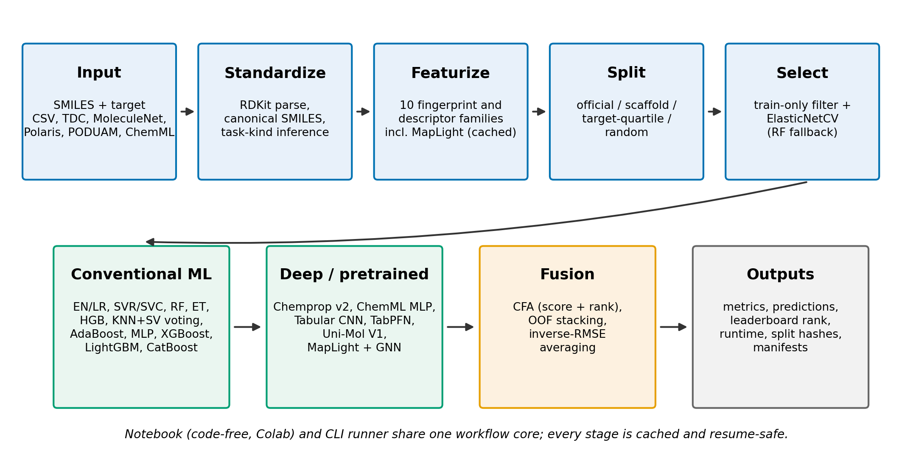
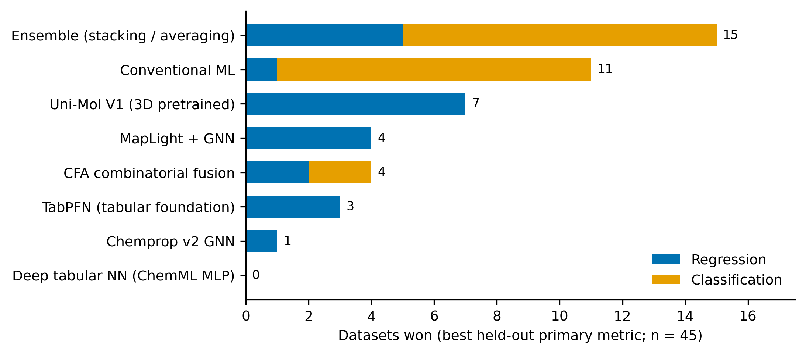
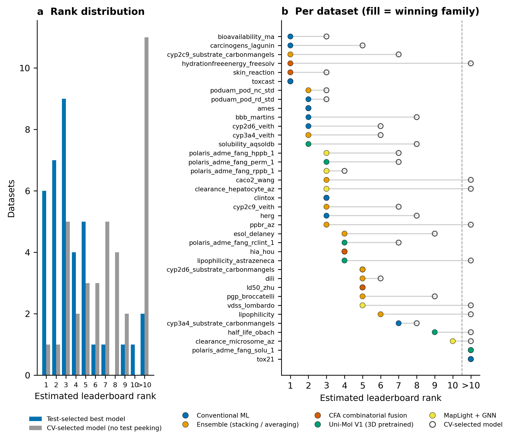
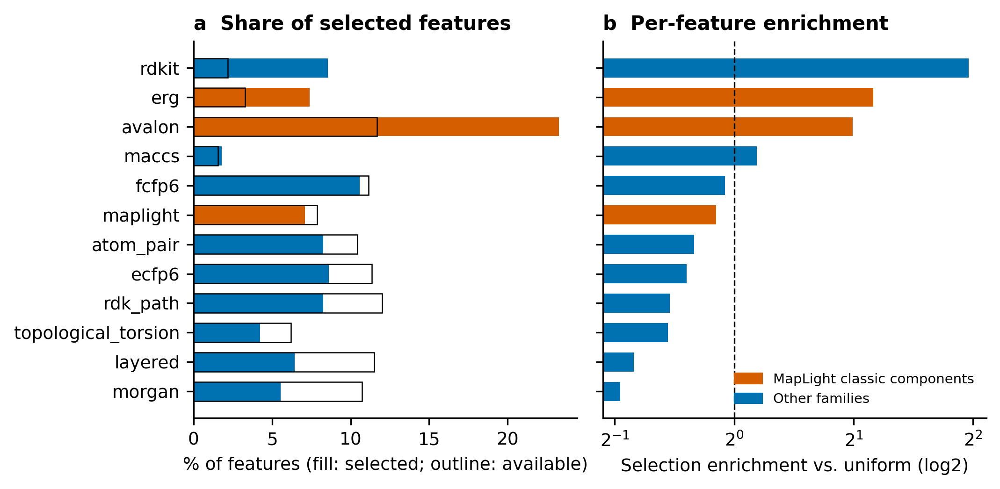
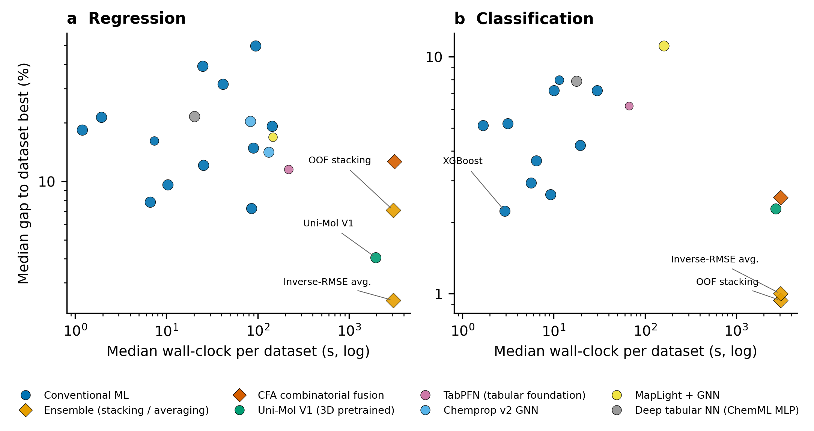
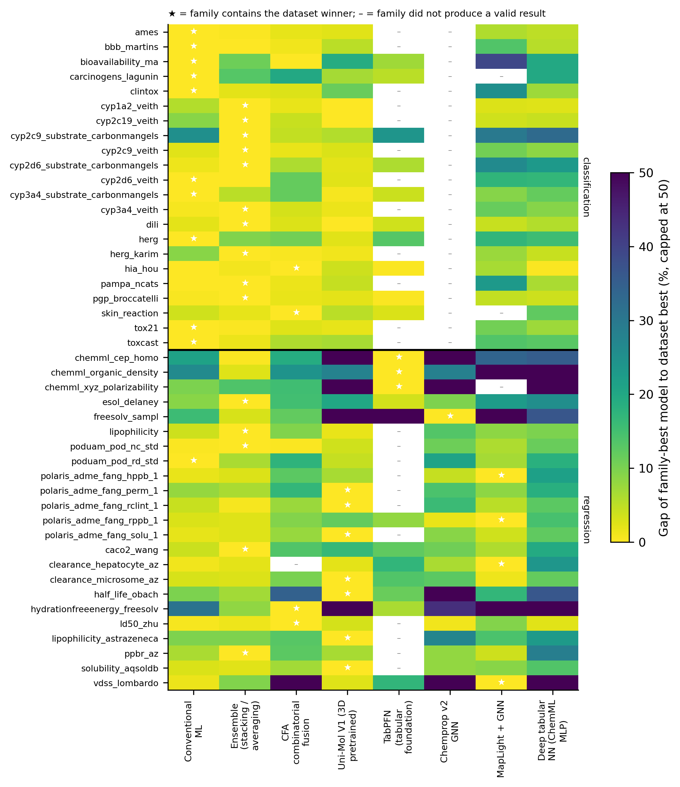

No Single Architecture Wins: Ensembles and Conventional Machine Learning Match Pretrained Molecular Models Across 45 Property-Prediction Benchmarks
Running title: AutoQSAR: an accessible, leakage-controlled AutoML workspace for molecular property prediction
Author: Scott Coffin1
1 California Office of Environmental Health Hazard Assessment, 1001 I Street, Sacramento, CA 95814, USA
Corresponding author: Scott Coffin (scott.l.coffin@gmail.com)
Author checklist before submission. Items still requiring author action are flagged inline with [AUTHOR]. They are: the ORCID identifier; the hardware statement in Section 2.12; the Zenodo DOI for the artifact archive; the repository release tag; and the two literature references flagged for final verification.
Abstract
Background. Prediction of absorption, distribution, metabolism, excretion and toxicity (ADMET) and related physicochemical properties from chemical structure has been dominated by an arms race toward ever-larger pretrained models, whose compute cost, accessibility and reproducibility limit adoption in academic, regulatory and small-laboratory settings. Whether that architectural scale is warranted has not been tested across benchmark suites under a single, leakage-controlled pipeline.
Implementation. We present AutoQSAR, a portable, open-source modelling and benchmarking workspace that predicts molecular properties from SMILES through one reproducible workflow: RDKit standardization, ten fingerprint and descriptor families including a MapLight-style composite, train-only filtering and ElasticNetCV feature selection, and a model library spanning conventional machine learning, gradient boosting, deep tabular networks, message-passing graph neural networks (Chemprop v2), a tabular foundation model (TabPFN), a 3D pretrained model (Uni-Mol V1), a descriptor–graph hybrid (MapLight + GNN), and combinatorial-fusion and stacking ensembles. It is delivered as both a code-free Jupyter/Colab notebook and a resume-safe command-line runner that share one workflow core.
Results. Across 45 datasets from five suites (TDC, MoleculeNet, Polaris ADME, PODUAM, ChemML; 23 regression and 22 classification tasks, 828 valid model–dataset evaluations), no architecture family won more than a third of datasets. Stacking and averaging ensembles won 15 datasets, conventional machine learning 11, the 3D pretrained Uni-Mol V1 seven (all regression), MapLight + GNN four, combinatorial fusion four, TabPFN three and Chemprop one. Ensembles and conventional models were also the most consistent, landing within 5% of the per-dataset best on 76% and 69% of datasets respectively, versus 62% for Uni-Mol V1 at roughly 115 times the median wall-clock cost. Against 430 published reference values on 37 datasets, the best AutoQSAR model per dataset placed in the estimated top ten on 35 and first on six. Because selecting that model uses held-out data, we also report a stricter protocol in which the model is chosen by cross-validation alone: top-ten placement then falls to 26 of 37 datasets, a gap we regard as the realistic estimate of deployable performance and one that applies to any leaderboard entry selected the same way. All results derive from a single split and seed per dataset — multi-seed replication was beyond the available compute budget — so individual model-to-model margins are provisional and we emphasize only findings resting on categorical rather than close differences.
Conclusions. A carefully engineered, GPU-optional AutoML pipeline matches or approaches specialized and pretrained models on most ADMET tasks; the optimal architecture is strongly dataset-dependent; and honest model selection costs roughly nine leaderboard placements out of 37. All results derive from a single split and seed per dataset, so individual model-to-model margins are provisional and the findings we emphasize are those resting on categorical differences rather than close comparisons. AutoQSAR makes competitive molecular property prediction accessible without specialized hardware and ships the artifacts needed to verify every number reported here.
Keywords: QSAR; ADMET; AutoML; molecular property prediction; benchmarking; reproducibility; data leakage; ensemble learning; foundation models
1. Background
Unfavourable ADMET properties remain among the most consequential causes of failure in drug development. The preclinical stage confronts an attrition rate of approximately 93%, and even among candidates that reach clinical testing more than 75% ultimately fail; undesirable ADME properties account for roughly 40% of candidate-molecule failures and toxicity contributes up to a further 30% [1]. The value of identifying these liabilities early is well established: after the pharmaceutical industry adopted systematic early ADMET screening in the late 1990s, the share of clinical failures attributable to ADME and pharmacokinetic causes fell from roughly 40% to 11% [2]. Because experimental ADMET assays are slow, costly and hard to scale to the growing number of synthesized and virtual compounds, in silico prediction of ADMET endpoints from chemical structure has become an indispensable complement to laboratory screening [1, 3].
Standardized public benchmarks have driven much of this progress. MoleculeNet established curated datasets and evaluation protocols for molecular machine learning [4], and the Therapeutics Data Commons (TDC) consolidated a large collection of ADMET datasets into a benchmark group with fixed splits, per-task metrics and a public leaderboard enabling direct comparison [5]. More recent resources such as Polaris have emphasized immutable, standardized benchmarks as a route to reproducible comparison. These resources catalysed rapid methodological progress, but also fostered a leaderboard culture in which incremental gains are pursued through increasingly elaborate architectures.
A prominent expression of this trend is the turn toward large pretrained “foundation” models. Graph-based models such as MolE, pretrained on roughly 842 million molecules [6], and MolGPS, scaled to three billion parameters with the aid of phenomics data [7], have established state-of-the-art results on subsets of the TDC ADMET tasks, and parameter-efficient successors such as MiniMol have continued this line of work [8]. Three-dimensional pretrained models such as Uni-Mol, which learns from conformer geometry rather than 2D topology alone, represent a distinct and comparatively cheap point on this spectrum [9]. While impressive, the largest of these models require very large pretraining corpora, specialized hardware and substantial engineering expertise, placing them out of practical reach for many of the settings in which ADMET prediction is most needed.
Critically, the assumption that architectural scale translates into superior ADMET prediction is not well supported. In the most comprehensive benchmark of its kind, Xia et al. evaluated twelve representative models — three non-deep and nine deep — and found that deep models generally fail to outperform non-deep ones, with gradient-boosted trees and random forests on molecular fingerprints tending to perform best, because tree models suit the non-smooth target functions characteristic of molecular property prediction [10]. A review in the Annual Review of Biomedical Data Science reached a concordant conclusion: a substantial and consistent advantage of deep learning over standard machine learning across diverse datasets and properties has not been demonstrated, and success in compound-property prediction does not necessarily scale with model complexity [11]. These observations are borne out on the TDC leaderboard itself, where gradient boosting on combined fingerprint and descriptor representations remains highly competitive: extreme gradient boosting (ADMETboost) [12]; CatBoost paired with ECFP, Avalon and ErG fingerprints plus ~200 molecular properties, which achieved top-3 performance on 16 of 22 benchmarks (the MapLight submission) [13]; AutoML over descriptor sets (CaliciBoost) [14]; and automatic feature-combination frameworks built on simple learners (MaxQsaring, ranked first on 19 of 22 TDC tasks) [15]. Systematic representation studies reinforce this: the choice of molecular representation is often more decisive than model architecture, and optimal choices are strongly dataset-dependent [16].
Compounding the questionable returns of architectural complexity is a deepening concern over reproducibility. Across the quantitative sciences, data leakage has been identified as a pervasive and often invisible cause of over-optimistic results, affecting at least 294 papers across 17 disciplines in one survey [17]. Cheminformatics is not exempt: leakage through structure duplication, preprocessing on combined train–test data, and feature selection performed before cross-validation systematically inflates QSAR performance estimates, and reproducibility, interpretability and generalizability deficits have hindered regulatory uptake of ML-based toxicity models [18]. A recent critical assessment of the TDC ADMET leaderboard found that only three top-ranked entries — CaliciBoost, MapLight and MapLight + GNN — passed all reproducibility checks, with most leading submissions exhibiting unavailable code, non-reproducible environments or methodological flaws [19]. Headline rankings therefore frequently fail to reflect either genuine methodological progress or deployable models.
A less-discussed form of the same problem concerns model selection. Benchmark suites report the performance of a chosen model on a held-out test set, but when the choice among many candidate models is itself made by comparing test-set scores, the reported number is an optimistic maximum over candidates rather than an estimate of what a practitioner would obtain on new data. This affects AutoML systems especially, since their value proposition is precisely that they search over many models. We treat it here as a first-class result rather than a caveat.
These problems are aggravated by a persistent accessibility gap. Many academic drug-discovery efforts founder in the preclinical “death valley” in part because researchers lack access to commercial ADME prediction software owing to high licensing fees [3]. Open tools have begun to address this. Web predictors such as ADMET-AI provide fast, accurate predictions with the highest average rank on the TDC leaderboard but do not allow users to retrain or extend models on their own data [20]. AutoML frameworks offer more flexibility: DeepMol delivered competitive, fully reproducible pipelines across 22 TDC ADMET datasets [21]; Auto-ADMET coupled grammar-based genetic programming with a Bayesian network to produce interpretable pipelines [22]; and code-light tools such as ChemXploreML have sought to lower the barrier for non-specialists [23]. Nonetheless, existing tools typically evaluate on a single benchmark suite, expose a limited subset of model families, and rarely combine a code-free interface with a rigorous, leakage-controlled batch-evaluation engine.
Here we present AutoQSAR, a portable QSAR modelling and benchmarking workspace designed to close these gaps. AutoQSAR couples a code-free, GPU-optional notebook with a resume-safe command-line benchmark runner, both calling a shared workflow core that enforces train-only feature filtering and selection. The same pipeline spans conventional machine learning, gradient boosting, deep tabular and graph neural networks, a tabular foundation model, a 3D pretrained model, descriptor–graph hybrids, and combinatorial-fusion and stacking ensembles, and is evaluated uniformly across 45 datasets from five benchmark collections — a breadth of cross-suite coverage that, to our knowledge, exceeds prior single-tool studies. Using this framework we show that no single family dominates, that ensembles and conventional machine learning match pretrained models on most benchmarks at a small fraction of the compute, and that the apparent margin between an AutoML system and a published leaderboard depends heavily on whether model selection is honest about held-out data.
2. Implementation
2.1 Software architecture
AutoQSAR predicts molecular properties directly from SMILES strings and is distributed with two interoperable entry points sharing a common workflow core: colab_qsar_tutorial.ipynb, an interactive widget-driven Jupyter/Colab notebook for code-free model building on built-in or user-supplied data; and run_autoqsar_ga_benchmarks.py, a command-line runner for resume-safe model comparison across curated dataset collections. Both call the same feature-generation, splitting, fusion and evaluation library (qsar_workflow_core.py), so interactive and batch results are produced by identical code paths (Figure 1).

Figure 1. The AutoQSAR workflow. Data ingestion and standardization, featurization, splitting and train-only feature selection are followed by a model library spanning conventional machine learning, deep and pretrained models, and fusion; every stage writes cached, resumable artifacts. The code-free notebook and the command-line runner share this core.
For each dataset the runner executes a fixed sequence: build molecular features; apply the train/test split and train-only ElasticNetCV feature selection; evaluate conventional models; optionally run a genetic-algorithm tuning pass; run deep workflows (ChemML backends, Chemprop v2 variants, Uni-Mol V1, MapLight + GNN); optionally run combinatorial fusion over all successful predictions; build ensembles over available members; and write cross-dataset performance tables. Optional families are skipped gracefully when dependencies, hardware or dataset-size guardrails are unmet, allowing the rest of a run to continue. The model inventory and its per-dataset availability are given in Table 1.
| Architecture family | Model | Valid regression datasets | Valid classification datasets | Wins | Datasets attempted |
|---|---|---|---|---|---|
| CFA combinatorial fusion | CFA (Combinatorial Fusion) | 22 | 22 | 4 | 45 |
| Chemprop v2 GNN | Chemprop v2 (AttentiveFP + Selected descriptors, ensemble=1) | 23 | 0 | 0 | 45 |
| Chemprop v2 GNN | Chemprop v2 (AttentiveFP, ensemble=1) | 21 | 0 | 1 | 45 |
| Conventional ML | AdaBoost | 23 | 22 | 2 | 45 |
| Conventional ML | CatBoost | 23 | 22 | 3 | 45 |
| Conventional ML | ElasticNetCV | 23 | 0 | 0 | 23 |
| Conventional ML | Extra trees | 23 | 22 | 0 | 45 |
| Conventional ML | HistGradientBoosting | 23 | 22 | 0 | 45 |
| Conventional ML | LogisticRegression | 0 | 22 | 1 | 22 |
| Conventional ML | MapLight CatBoost (Strict Parity) | 23 | 0 | 0 | 23 |
| Conventional ML | Random forest | 23 | 22 | 1 | 45 |
| Conventional ML | SVC | 0 | 22 | 0 | 22 |
| Conventional ML | SVR | 23 | 0 | 0 | 23 |
| Conventional ML | Tabular CNN | 23 | 0 | 0 | 23 |
| Conventional ML | Tabular MLP | 23 | 22 | 0 | 45 |
| Conventional ML | Voting Classifier (KNN, SVM) | 0 | 22 | 0 | 22 |
| Conventional ML | Voting Regressor (KNN, SVM) | 23 | 0 | 0 | 23 |
| Conventional ML | XGBoost | 23 | 22 | 4 | 45 |
| Deep tabular NN (ChemML MLP) | ChemML MLP (PyTorch) | 23 | 22 | 0 | 45 |
| Ensemble (stacking / averaging) | Ensemble (OOF Stacking (RidgeCV, 5-fold)) | 23 | 22 | 4 | 45 |
| Ensemble (stacking / averaging) | Ensemble (Weighted average (inverse train RMSE)) | 23 | 22 | 11 | 45 |
| MapLight + GNN | MapLight + GNN (CatBoost, Strict Parity) | 22 | 20 | 4 | 45 |
| TabPFN (tabular foundation) | TabPFNClassifier | 0 | 10 | 0 | 10 |
| TabPFN (tabular foundation) | TabPFNRegressor | 12 | 0 | 3 | 35 |
| Uni-Mol V1 (3D pretrained) | Uni-Mol V1 | 23 | 22 | 7 | 45 |
Table 1. Model inventory. “Valid” datasets are those on which the model produced a metric without an error; differences from 45 reflect task-type applicability (regression-only or classification-only estimators), dataset-size guardrails, or backend failures (Section 3.9).
2.2 Datasets and curation
Benchmark datasets were drawn from five public collections through dedicated loaders: ChemML bundled examples (cep_homo, organic_density, xyz_polarizability); TDC single-prediction ADME and Tox tasks; MoleculeNet physicochemical datasets (ESOL [24], FreeSolv [25], Lipophilicity); Polaris ADME benchmark mirrors; and the PODUAM point-of-departure datasets [26]. Each dataset is represented internally by a DatasetSpec recording the SMILES column, target column, recommended split, recommended metric, benchmark suite and any leaderboard reference metadata.
All molecules were standardized before featurization. Canonicalization coerced the target to numeric, removed rows with missing or non-finite SMILES or target values, and parsed each SMILES with RDKit [27]; molecules that failed to parse were dropped and the remainder re-encoded as canonical SMILES. For datasets carrying a predefined split column, rows missing the split assignment were removed.
Target transformation followed a suite-aware policy. Under the default auto mode, datasets from the TDC, MoleculeNet, Polaris, literature and PFAS auxiliary suites were kept on their native scale, while other datasets used a base-10 logarithmic transform when all target values were positive; non-positive targets disabled the transform.
For TDC datasets, official splits were preferred over generic resampling. Where PyTDC exposes an official admet_group entry, the runner uses that train_val/test split in preference to legacy single-prediction cache entries; official split frames are cached under data/_autoqsar_cache and stale entries lacking an official split are refreshed automatically. This distinction matters for interpretation and we preserve it throughout: 22 TDC datasets and 5 Polaris datasets used official predefined splits, while the remaining 18 used locally generated scaffold, random or target-quartile splits and are therefore not directly leaderboard-equivalent (Section 3.4).
Task kind was inferred automatically rather than taken from catalog metadata: strict binary 0/1 targets were routed to the classification workflow and all other numeric targets to regression. This inference overrides several catalog entries that record a regression metric for what are in fact binary endpoints (for example the CYP inhibition tasks), and the inferred kind is what all analyses below use.
2.3 Molecular representations
Ten configurable feature families were implemented on RDKit, all returning fixed-width numeric matrices. Circular and path-based fingerprints were generated at 1024 bits by default. Morgan fingerprints [28] used radius 2; ECFP6 and FCFP6 were generated with the RDKit MorganGenerator at radius 3, FCFP6 using feature-based atom invariants; RDKit layered, atom-pair, topological-torsion and RDKit path fingerprints were each computed at 1024 bits, the path fingerprint spanning path lengths 1–7. MACCS keys [29] were generated at their native 167-bit width, and the full RDKit 2D descriptor set was computed from Descriptors._descList.
The “MapLight classic” family reproduces the feature construction of the MapLight TDC submission [13]: a hashed Morgan count fingerprint (radius 2, 1024 bits), an Avalon count fingerprint (1024 bits) [30], the extended reduced graph (ErG) fingerprint [31], and a curated panel of approximately 200 RDKit descriptors spanning connectivity and shape indices (BalabanJ, BertzCT, Chi and Kappa indices), VSA-family descriptors, physicochemical properties (ExactMolWt, MolLogP, TPSA, FractionCSP3), hydrogen-bonding and ring counts, functional-group fragment counts, and the QED drug-likeness score. In the feature-selection analyses below, this composite appears as its three constituent families (avalon, erg and the maplight descriptor panel), and we report both the components and their sum.
After assembly, every feature matrix passed a common finalization step: infinities replaced with missing values, all columns coerced to numeric, values exceeding the float32 range masked, remaining gaps imputed with the per-column median (falling back to zero), and the matrix cast to float32.
2.4 Persistent feature store
To avoid recomputing expensive descriptors across datasets and runs, features were cached in a persistent, content-addressed store writing Parquet shards where pyarrow or fastparquet is available and CSV otherwise. Each representation is identified by a key derived from a SHA-256 hash of a canonical JSON payload listing the selected feature families, Morgan radius and fingerprint bit width, so distinct configurations never collide. A schema file records the representation payload and column order; a mismatch raises an error rather than silently mixing definitions. Feature rows are keyed by canonical SMILES, so only molecules absent from the cache are computed on a given run, and cached and new rows are merged back into the exact requested row order. Additional caches store assembled benchmark feature matrices and tuned conventional models.
2.5 Splitting and cross-validation
Four splitting strategies were supported — random, target-quartile, scaffold and predefined — selected per dataset with a benchmark-aware default. Command-line defaults set target-quartile stratification, a test fraction of 0.2 and random seed 13.
Scaffold splitting used Bemis–Murcko scaffolds [32] computed after removing stereochemistry, with explicit fallbacks for molecules that failed scaffold perception or yielded no scaffold. Molecules were grouped by scaffold and assigned to the test set by a greedy, seeded procedure that packs whole scaffold groups until the target test fraction is reached, guaranteeing that no scaffold appears in both partitions. Target-quartile splitting binned the continuous target into quartiles with pd.qcut and stratified on those bins, reverting to random splitting when a dataset was too small or too low in target variance to form at least two populated bins per fold. For TDC benchmark datasets the official partition was used directly, with deterministic reassignment by SMILES so that the same molecule is never placed in both train and test.
Cross-validation mirrored the split geometry: scaffold runs used GroupKFold over scaffold groups, target-quartile runs StratifiedKFold over quartile bins, and random runs shuffled KFold, each with a configurable fold count and a defined fallback to random folds when group or bin constraints could not be satisfied.
2.6 Feature filtering and selection
Before model fitting, a leak-free pre-filter removed degenerate and redundant columns using statistics computed on the training partition only and applied identically to the held-out set: near-constant columns below a variance threshold of 1 × 10⁻⁸ were dropped, binary columns whose positive prevalence fell outside 0.005–0.995 were removed, and exact-duplicate columns were pruned.
Selection was then performed train-only with a cross-validated elastic net. The ElasticNetCV selector was fit in an isolated subprocess with a wall-clock timeout over a configurable L1-ratio grid and log-spaced alpha grid, using folds matched to the active split strategy. Features were retained when the absolute coefficient exceeded a threshold, with at least one feature always kept and the retained set capped at the larger of one feature or 10% of the training-row count. To bound runtime, the selector used a dataset-size runtime model: when predicted elastic-net runtime exceeded a configurable threshold (default 7200 s), or when the elastic net timed out or failed, selection fell back to RandomForest importance ranking. Selected features, coefficients and diagnostics were written per dataset.
2.7 Model library
Conventional machine learning. For regression: elastic-net regression with internal cross-validated alpha/L1 search, support vector regression (C = 10, ε = 0.1, RBF kernel), random forests (400 trees), extremely randomized trees (500 trees), histogram gradient boosting (learning rate 0.05, up to 500 iterations, max depth 8), a soft-voting KNN+SVR regressor with adaptively chosen neighbour count, AdaBoost (500 estimators, learning rate 0.05), and a tabular multilayer perceptron (hidden layers 512 and 256, ReLU, Adam, L2 1 × 10⁻⁴, up to 300 iterations), all via scikit-learn [33]. Gradient-boosting libraries were added when installed: XGBoost (400 trees, depth 6, learning rate 0.05, subsample and column-sample 0.9) [34], LightGBM (500 trees, learning rate 0.05, 63 leaves) [35] and CatBoost (400 iterations, depth 6, learning rate 0.05) [36]. Numeric pipelines were preceded by median imputation and standardization where appropriate. The classification table substituted the analogous estimators (logistic regression, SVC with probability estimates, random forest, extra trees, histogram gradient boosting, soft-voting KNN+SVC, AdaBoost, tabular MLP and the gradient-boosting classifiers) with classification losses and metrics.
Specialized tabular and graph models. A compact one-dimensional convolutional regressor treats each standardized feature vector as a 1D signal and applies two same-padded ReLU convolutional blocks (64 filters, kernel size 5), global max pooling, a 128-unit dense layer with dropout and a linear output, trained with Adam and early stopping; it is intentionally small enough to run on CPU. The MapLight + GNN workflow fits a CatBoost model on the union of MapLight classic features and pretrained graph isomorphism network (GIN) fingerprints where the supporting DGL/PyTorch stack is available; a strict leaderboard-parity variant of the MapLight CatBoost model uses mean-absolute-error optimization, target scaling and five-seed averaging to reproduce the published protocol [13]. Graph neural networks were provided through Chemprop v2 [37, 38] with configured directed message-passing (D-MPNN), CMPNN-style and AttentiveFP-style architectures; optional variants augment the graph encoder with train-only selected tabular descriptors or an RDKit-2D featurizer. Uni-Mol V1 [9] was included as a 3D pretrained baseline, running automatically when a GPU was detected (10 epochs, learning rate 1 × 10⁻⁴, batch size 16, early stopping patience 5). The TabPFN tabular foundation model [39] was available for regression and classification, gated by a 1000-row training guardrail consistent with its design constraints.
Genetic-algorithm tuning. An optional stage tunes a small set of estimators (elastic net and CatBoost for regression; elastic-net-penalized logistic regression and CatBoost for classification). It is disabled by default unless explicitly requested or unless an auto mode finds prior evidence that a tuned family is worth rerunning. It was disabled in the benchmark reported here (Section 3.8).
2.8 Combinatorial fusion and ensembling
After base models produced aligned train and test prediction vectors, AutoQSAR optionally fused them by combinatorial fusion analysis (CFA) [40] in both score and rank spaces. To control combinatorial growth, inputs were first reduced to the best model per workflow and the subset search bounded by a budget guardrail. For each candidate subset the algorithm computed a performance strength as the inverse of the base model’s training error and a diversity strength from the mean pairwise distance between normalized, sorted score profiles, then evaluated three score-space weightings (equal, performance-weighted, diversity-weighted) plus the corresponding rank-space variants. Rank-space combinations were linearly calibrated back to the target scale and given a small metric discount when subset diversity exceeded a threshold, so that diverse rank fusions were preferred only when genuinely complementary. Candidates were ranked by the adjusted training metric and the best fused predictor returned with its selected models, weights and a candidate-diagnostics table. For regression, fusion minimized mean absolute error.
Three further ensemble strategies were available over the same prediction pool: out-of-fold stacking with a RidgeCV meta-model (logistic for classification), an inverse-training-RMSE weighted average (weighting by the primary classification metric for classification), and a simple average. Ensemble construction supported optional member filtering, including removal of highly correlated members and exclusion of members with negative held-out R². We return to the implications of that last option in Section 3.3 and in the Limitations, because it consults held-out data.
2.9 Evaluation metrics
Regression performance was summarized by RMSE, mean absolute error, R² and Spearman rank correlation, computed separately on training and held-out sets; classification by AUROC, AUPRC, balanced accuracy and the Matthews correlation coefficient. Each dataset carries a primary metric: for cross-dataset ranking we used RMSE for regression and, for classification, the dataset’s designated primary metric — AUPRC for the imbalanced TDC CYP inhibition and substrate tasks and AUROC otherwise, consistent with the TDC leaderboard’s per-dataset assignments. For comparisons against published leaderboards we re-selected the best model per dataset under the leaderboard’s metric, which is MAE or Spearman rather than RMSE for several TDC regression tasks; the best model under RMSE and under the leaderboard metric therefore sometimes differ, and both are reported (Tables S1 and 4).
Because absolute metric differences are not comparable across datasets with different target units — an RMSE gap of 1.0 is negligible for hepatocyte clearance and fatal for log-solubility — all cross-dataset summaries of how close a model came to the per-dataset best use a relative gap, |score − best| / |best|.
2.10 Leaderboard comparison
Where curated leaderboard references existed, the best AutoQSAR model was compared against published values using a normalized metric-matching procedure. Comparisons were made only when the leaderboard metric matched the dataset’s primary metric and a numeric reference value was available; the framework then computed the signed gap to the top-1 reference, the gap to the top-10 cutoff, and an estimated rank relative to the published entries. Reference rows were aggregated from TDC, MoleculeNet and Polaris leaderboards together with a manually curated set of TDC ADMET reference values and, for ESOL and Lipophilicity, current literature values in place of the 2017-era MoleculeNet baselines, which are no longer representative of the state of the art.
Two limits of this procedure should be kept in view. First, “estimated rank” reflects the references available for a dataset, not a live leaderboard submission; a dataset with few references yields an optimistic-looking rank. Second, ranks are only leaderboard-equivalent where the split protocol matches, which is true for the 22 TDC admet_group datasets and the 5 Polaris datasets but not for the 10 comparable datasets evaluated on locally generated splits. We report results stratified by this distinction throughout.
2.11 Model selection protocols
We report every headline result under two selection protocols.
Test-selected. The best model per dataset is the one with the best held-out primary metric. This is the protocol used by AutoML leaderboard submissions generally, and it is what Sections 3.2–3.4 report as the primary analysis for comparability with published entries.
Cross-validation-selected. The model is chosen per dataset solely by its cross-validated primary metric on the training partition, and its held-out score is then read off without further choice. This estimates what a practitioner obtains when the test set is genuinely untouched. It is available for the models that emit cross-validated metrics — the conventional estimators, TabPFN and the ChemML MLP — but not for Chemprop, Uni-Mol, MapLight + GNN or the fusion methods, so it is a conservative lower bound on what a fully CV-driven AutoQSAR would achieve.
2.12 Reproducibility, caching and computing environment
The runner is designed for long, resumable runs. Completed datasets and compatible intermediates are reused on resume, and each run records a configuration signature, per-dataset run-status manifests, split-signature hashes and per-stage runtime diagnostics. Two cost profiles are provided: a default cost-optimized profile that disables historically low-value expensive variants, and a full profile restoring the broader model set. Each dataset directory retains metrics, predictions, selected features, a feature-deduplication report, the CFA candidate table and ensemble weights, supporting independent verification of every reported result.
The workflow targets Python 3.11 and runs on Windows, macOS, Linux or Google Colab. The core workflow runs CPU-only; GPU availability primarily affects runtime and whether optional backends such as local TabPFN and Uni-Mol are practical. Pinned conda and pip/uv specifications are distributed with the repository, alongside an Apptainer/Singularity definition, Slurm submission scripts for NSF ACCESS HPC clusters, and an OpenStack orchestration path for Jetstream2 [41, 42] that routes GPU-dependent workflows to A100-backed instances and the remaining workflows to CPU instances under a tracked service-unit budget.
[AUTHOR: hardware statement requires confirmation.] The benchmark artifacts deposited with this paper record execution on a Windows workstation with an NVIDIA GeForce RTX 4060 Laptop GPU under conda environment autoqsar-py311, between 4 and 9 May 2026. We therefore describe the reported benchmark as having been produced on consumer-grade hardware, which is the more conservative claim and is directly supported by the deposited run artifacts; it also strengthens rather than weakens the accessibility argument of this work, since the results in Section 3 required no datacentre accelerator. If the reported run is instead to be attributed to the Jetstream2 A100 instances described above, the corresponding artifacts must replace those currently in benchmark_results/benchmark_name_date/, because every figure, table and number in this paper is regenerated from that directory (Section 2.12).
All figures, tables and numerical claims in this paper are regenerated from committed benchmark artifacts by a single command, python portable_colab_qsar_bundle/render_manuscript_assets.py, which re-executes the analysis notebook and writes manuscript_assets/ (figures, tables and a manuscript_numbers.json containing every headline number quoted in the text).
3. Results and discussion
3.1 Benchmark coverage
We executed AutoQSAR across the full benchmark suite under a single fixed configuration (cost_optimized profile, random seed 13, Chemprop seed 42) on a GPU-equipped workstation. Of 46 datasets attempted, 45 completed; tdc_herg_central, the largest task attempted, was abandoned after more than 24 hours without completing and is excluded from all analyses. The 45 completed datasets comprise 23 regression and 22 classification tasks drawn from five collections: TDC (32), Polaris ADME (5), ChemML (3), MoleculeNet (3) and PODUAM (2). They span 38 to 13,445 molecules (median 1,478; 156,090 in total) and four split protocols (27 predefined, 6 scaffold, 6 random, 6 target-quartile). Twenty-five models produced at least one valid result, yielding 828 valid model–dataset evaluations. The dataset catalog is given in Table 2.
| Dataset | Suite | Task | Molecules | Train | Test | Split | Target scale | Ranking metric | Best model | Best value |
|---|---|---|---|---|---|---|---|---|---|---|
| tdc_ames | TDC | classification | 7278 | 5821 | 1457 | predefined | raw | roc_auc | XGBoost | 0.875 |
| tdc_bbb_martins | TDC | classification | 2030 | 1624 | 406 | predefined | raw | roc_auc | Random forest | 0.932 |
| tdc_bioavailability_ma | TDC | classification | 640 | 512 | 128 | predefined | raw | roc_auc | CatBoost | 0.777 |
| tdc_carcinogens_lagunin | TDC | classification | 280 | 224 | 56 | random | raw | roc_auc | AdaBoost | 0.863 |
| tdc_clintox | TDC | classification | 1478 | 1182 | 296 | random | raw | roc_auc | CatBoost | 0.949 |
| tdc_cyp1a2_veith | TDC | classification | 12579 | 10061 | 2518 | scaffold | raw | roc_auc | Ensemble (Weighted average (inverse train RMSE)) | 0.970 |
| tdc_cyp2c19_veith | TDC | classification | 12665 | 10131 | 2534 | scaffold | raw | roc_auc | Ensemble (Weighted average (inverse train RMSE)) | 0.921 |
| tdc_cyp2c9_substrate_carbonmangels | TDC | classification | 669 | 534 | 135 | predefined | raw | auprc | Ensemble (OOF Stacking (RidgeCV, 5-fold)) | 0.482 |
| tdc_cyp2c9_veith | TDC | classification | 12092 | 9673 | 2419 | predefined | raw | auprc | Ensemble (OOF Stacking (RidgeCV, 5-fold)) | 0.810 |
| tdc_cyp2d6_substrate_carbonmangels | TDC | classification | 667 | 532 | 135 | predefined | raw | auprc | Ensemble (Weighted average (inverse train RMSE)) | 0.673 |
| tdc_cyp2d6_veith | TDC | classification | 13130 | 10504 | 2626 | predefined | raw | auprc | XGBoost | 0.722 |
| tdc_cyp3a4_substrate_carbonmangels | TDC | classification | 670 | 535 | 135 | predefined | raw | auprc | LogisticRegression | 0.717 |
| tdc_cyp3a4_veith | TDC | classification | 12328 | 9861 | 2467 | predefined | raw | auprc | Ensemble (OOF Stacking (RidgeCV, 5-fold)) | 0.890 |
| tdc_dili | TDC | classification | 475 | 379 | 96 | predefined | raw | roc_auc | Ensemble (OOF Stacking (RidgeCV, 5-fold)) | 0.915 |
| tdc_herg | TDC | classification | 655 | 523 | 132 | predefined | raw | roc_auc | AdaBoost | 0.861 |
| tdc_herg_karim | TDC | classification | 13445 | 10755 | 2690 | scaffold | raw | roc_auc | Ensemble (Weighted average (inverse train RMSE)) | 0.902 |
| tdc_hia_hou | TDC | classification | 578 | 461 | 117 | predefined | raw | roc_auc | CFA (Combinatorial Fusion) | 0.990 |
| tdc_pampa_ncats | TDC | classification | 2034 | 1626 | 408 | scaffold | raw | roc_auc | Ensemble (Weighted average (inverse train RMSE)) | 0.806 |
| tdc_pgp_broccatelli | TDC | classification | 1218 | 973 | 245 | predefined | raw | roc_auc | Ensemble (Weighted average (inverse train RMSE)) | 0.929 |
| tdc_skin_reaction | TDC | classification | 404 | 323 | 81 | random | raw | roc_auc | CFA (Combinatorial Fusion) | 0.769 |
| tdc_tox21 | TDC | classification | 7258 | 5806 | 1452 | random | raw | roc_auc | XGBoost | 0.812 |
| tdc_toxcast | TDC | classification | 1731 | 1384 | 347 | random | raw | roc_auc | CatBoost | 0.791 |
| chemml_cep_homo | ChemML | regression | 500 | 400 | 100 | target_quartiles | raw | rmse | TabPFNRegressor | 0.086 |
| chemml_organic_density | ChemML | regression | 500 | 400 | 100 | target_quartiles | log10 | rmse | TabPFNRegressor | 0.005 |
| chemml_xyz_polarizability | ChemML | regression | 38 | 30 | 8 | target_quartiles | log10 | rmse | TabPFNRegressor | 0.007 |
| esol_delaney | MoleculeNet | regression | 1128 | 874 | 254 | scaffold | raw | rmse | Ensemble (Weighted average (inverse train RMSE)) | 0.592 |
| freesolv_sampl | MoleculeNet | regression | 642 | 513 | 129 | random | raw | rmse | Chemprop v2 (AttentiveFP, ensemble=1) | 1.080 |
| lipophilicity | MoleculeNet | regression | 4200 | 3357 | 843 | scaffold | raw | rmse | Ensemble (Weighted average (inverse train RMSE)) | 0.582 |
| poduam_pod_nc_std | PODUAM | regression | 1842 | 1473 | 369 | target_quartiles | raw | rmse | Ensemble (Weighted average (inverse train RMSE)) | 0.699 |
| poduam_pod_rd_std | PODUAM | regression | 2355 | 1884 | 471 | target_quartiles | raw | rmse | XGBoost | 0.551 |
| polaris_adme_fang_hppb_1 | Polaris | regression | 1808 | 1446 | 362 | predefined | raw | rmse | MapLight + GNN (CatBoost, Strict Parity) | 0.449 |
| polaris_adme_fang_perm_1 | Polaris | regression | 2642 | 2113 | 529 | predefined | raw | rmse | Uni-Mol V1 | 0.399 |
| polaris_adme_fang_rclint_1 | Polaris | regression | 3054 | 2443 | 611 | predefined | raw | rmse | Uni-Mol V1 | 0.512 |
| polaris_adme_fang_rppb_1 | Polaris | regression | 885 | 708 | 177 | predefined | raw | rmse | MapLight + GNN (CatBoost, Strict Parity) | 0.494 |
| polaris_adme_fang_solu_1 | Polaris | regression | 2173 | 1738 | 435 | predefined | raw | rmse | Uni-Mol V1 | 0.575 |
| tdc_caco2_wang | TDC | regression | 910 | 728 | 182 | predefined | raw | rmse | Ensemble (Weighted average (inverse train RMSE)) | 0.336 |
| tdc_clearance_hepatocyte_az | TDC | regression | 1213 | 970 | 243 | predefined | raw | rmse | MapLight + GNN (CatBoost, Strict Parity) | 43.976 |
| tdc_clearance_microsome_az | TDC | regression | 1102 | 881 | 221 | predefined | raw | rmse | Uni-Mol V1 | 35.888 |
| tdc_half_life_obach | TDC | regression | 667 | 532 | 135 | predefined | raw | rmse | Uni-Mol V1 | 17.222 |
| tdc_hydrationfreeenergy_freesolv | TDC | regression | 642 | 513 | 129 | target_quartiles | raw | rmse | CFA (Combinatorial Fusion) | 0.556 |
| tdc_ld50_zhu | TDC | regression | 7385 | 5907 | 1478 | predefined | raw | rmse | CFA (Combinatorial Fusion) | 0.834 |
| tdc_lipophilicity_astrazeneca | TDC | regression | 4200 | 3360 | 840 | predefined | raw | rmse | Uni-Mol V1 | 0.587 |
| tdc_ppbr_az | TDC | regression | 2790 | 2231 | 559 | predefined | raw | rmse | Ensemble (Weighted average (inverse train RMSE)) | 11.014 |
| tdc_solubility_aqsoldb | TDC | regression | 9980 | 7985 | 1995 | predefined | raw | rmse | Uni-Mol V1 | 0.989 |
| tdc_vdss_lombardo | TDC | regression | 1130 | 904 | 226 | predefined | raw | rmse | MapLight + GNN (CatBoost, Strict Parity) | 4.668 |
Table 2. Dataset catalog. “Ranking metric” is the metric used for cross-dataset model ranking (RMSE for regression; the dataset’s designated primary classification metric otherwise); leaderboard comparisons in Table 4 use the leaderboard’s own metric, which differs for several TDC regression tasks.
3.2 No single architecture dominates
The central finding is that no architecture family won across the benchmark (Figure 2, Table 3). Stacking and averaging ensembles produced the most outright wins (15 of 45 datasets: 10 classification, 5 regression), followed by conventional machine learning (11: 10 classification, 1 regression), the 3D pretrained Uni-Mol V1 (7, all regression), the MapLight + GNN descriptor–graph hybrid (4, all regression), combinatorial fusion (4: 2 regression, 2 classification), TabPFN (3, all regression) and Chemprop v2 (1). The deep tabular network won none. The largest single share is 33% of datasets.

Figure 2. Datasets won by each architecture family, split by task kind. A win is the best held-out primary metric on that dataset among all 25 models.
The task split is sharp and, we think, the more useful result for practitioners. Classification was won almost entirely by ensembles and conventional gradient boosting (20 of 22 datasets between them); no pretrained model — 3D, graph or tabular — won a single classification task. Regression was far more heterogeneous: Uni-Mol V1 took 7 datasets, MapLight + GNN 4, ensembles 5, TabPFN 3, CFA 2, Chemprop 1 and conventional machine learning 1. The datasets Uni-Mol won are chemically coherent — permeability, clearance, half-life, lipophilicity and aqueous solubility — properties for which conformational and shape information is mechanistically plausible as a signal that 2D descriptors capture only indirectly. TabPFN’s three wins are all small, clean, low-noise physicochemical or quantum-chemical regressions (the ChemML cep_homo, organic_density and xyz_polarizability sets, the last with only 38 molecules), consistent with its design as a prior-fitted network for small tabular problems.
Per-dataset winners, including the corresponding cross-validation-selected model, are listed in Table S1, and the full dataset × family landscape is shown in Figure 6. These are single-split, single-seed outcomes: an unknown fraction of individual winners would change under a different seed, so we read Figure 2 as a distribution of capability across families rather than as a precise ranking, and we base the claim below on its breadth rather than on any one dataset’s result (see Limitations).
3.3 Consistency versus peak performance
Win counts reward only the single best model per dataset and understate the reliability of models that are consistently near-best without winning. Table 3 therefore reports, for each family, the median relative gap to the per-dataset best, the fraction of datasets on which the family’s best member landed within 5% of the best result, and the median rank that member achieved.
| Architecture family | Models | Datasets with valid results | Wins (regression) | Wins (classification) | Median gap to best, regression (%) | Median gap to best, classification (%) | Within 5% of best (% of datasets) | Median rank of family-best model |
|---|---|---|---|---|---|---|---|---|
| Ensemble (stacking / averaging) | 2 | 45 | 5 | 10 | 2.4 | 0.0 | 75.6 | 2.0 |
| Conventional ML | 15 | 45 | 1 | 10 | 3.9 | 0.1 | 68.9 | 2.0 |
| Uni-Mol V1 (3D pretrained) | 1 | 45 | 7 | 0 | 3.7 | 2.3 | 62.2 | 6.0 |
| CFA combinatorial fusion | 1 | 44 | 2 | 2 | 12.6 | 2.5 | 43.2 | 7.0 |
| MapLight + GNN | 1 | 42 | 4 | 0 | 7.6 | 11.1 | 26.2 | 11.5 |
| TabPFN (tabular foundation) | 2 | 22 | 3 | 0 | 9.8 | 4.6 | 40.9 | 4.5 |
| Chemprop v2 GNN | 2 | 23 | 1 | 0 | 12.5 | 17.4 | 9.0 | |
| Deep tabular NN (ChemML MLP) | 1 | 45 | 0 | 0 | 21.6 | 7.9 | 15.6 | 14.0 |
Table 3. Architecture-family coverage and consistency. Gaps are relative to the per-dataset best primary metric. “Within 5% of best” counts datasets where the family’s best member fell within 5% of the dataset winner. Families evaluated on fewer than 45 datasets were limited by task applicability, size guardrails or backend failures (Table S4); their percentages are computed over the datasets on which they ran.
On this measure the ordering is clearer than the win counts suggest. Ensembles were within 5% of the best on 76% of datasets with a median rank of 2 and a median classification gap of 0.03%; conventional machine learning followed at 69% and median rank 2. Uni-Mol V1, despite winning more regression datasets than any other single architecture, was within 5% on 62% of datasets and had a median rank of 6, reflecting a bimodal profile: when 3D information helps it wins outright, and when it does not it falls well down the table. MapLight + GNN (26% within 5%, median rank 11.5) and Chemprop v2 (17%, median rank 9) were the least consistent of the model families, and the deep tabular network was last (16%, median rank 14).
Three cautions apply to this table. Families with fewer models have fewer chances to produce a near-best member, so the 15-model conventional family is flattered relative to single-model families; the ensemble row is not a like-for-like competitor, because ensembles are built from the other families’ predictions and, under the configuration used here, their member filtering consults held-out R²; and every value derives from a single split and seed, so adjacent rows are not separated — the 76% versus 69% gap between ensembles and conventional machine learning, in particular, should be read as “indistinguishable at this resolution” rather than as an ordering. The ensemble family’s apparent consistency should be read as “the pipeline’s output is reliably near-best”, not as evidence that stacking is intrinsically superior to its members. Section 3.5 quantifies how much the fusion layer actually adds.
3.4 Leaderboard competitiveness, and the cost of honest model selection
Across the leaderboard-comparison layer, 37 datasets could be compared against 430 published reference values. The best AutoQSAR model per dataset placed within the estimated top ten on 35 of 37 datasets and first on six (tdc_bioavailability_ma, tdc_carcinogens_lagunin, tdc_cyp2c9_substrate_carbonmangels, tdc_hydrationfreeenergy_freesolv, tdc_skin_reaction, tdc_toxcast), with a median estimated rank of 3. The two datasets below the top ten were polaris_adme_fang_solu_1 and tdc_tox21.

Figure 3. Estimated leaderboard placement across 37 comparable datasets. (a) Rank distribution for the test-selected best model and for the model selected by cross-validation alone. (b) Per-dataset ranks; filled markers are the test-selected model coloured by architecture family, open markers the cross-validation-selected model. The dashed line marks the top-ten boundary.
That headline, however, is produced by choosing the best of 25 models using held-out scores. Under the stricter protocol in which the model is chosen by cross-validation alone (Section 2.11), top-ten placement falls from 35 to 26 of 37 datasets, first places from six to one, and the median estimated rank from 3 to 7 (Figure 3). Across all 45 datasets, the cross-validation-selected model was the overall winner on only 2 and sat a median of 10.4% above the per-dataset best.
Both protocols rest on a single split and seed, so the individual ranks in Figure 3 carry unquantified seed variance and the aggregate counts are the more trustworthy quantity (see Limitations). That caveat does not soften the direction of the effect: the shift is large and one-sided, and it would take implausibly favourable seed variance to erase a nine-dataset gap. This gap of roughly nine leaderboard placements is, in our view, the most practically important number in this paper. It is not a defect specific to AutoQSAR: any leaderboard entry that selects among candidate models or configurations using test-set feedback carries the same inflation, and the reproducibility audit of the TDC leaderboard [19] suggests that such selection is rarely documented. We report both protocols rather than only the favourable one, and we take the cross-validation-selected result — top ten on roughly 70% of comparable datasets — as the honest estimate of what a practitioner should expect. The cross-validation protocol is also a conservative bound here, since Chemprop, Uni-Mol, MapLight + GNN and the fusion methods do not emit cross-validated metrics in this run and were therefore ineligible for cross-validation-based selection; extending CV metrics to those backends is the single most valuable change we can make to the runner.
Comparability also varies by dataset, and the aggregate obscures it. Restricted to the 22 TDC datasets evaluated on official admet_group splits — the only subset directly comparable to the public TDC leaderboard — the test-selected model placed in the top ten on all 22 with a median rank of 3 and first on two; the cross-validation-selected model placed in the top ten on 15 with a median rank of 8. On the 5 Polaris datasets the test-selected model placed in the top ten on 4. The remaining 10 comparable datasets used locally generated splits and are not leaderboard-equivalent; four of the six estimated first places fall in this group, and those four should be read as “competitive with published values under a comparable but not identical protocol”, not as leaderboard claims. Per-dataset detail, including both protocols and the reference counts behind each rank, is given in Table 4.
| Dataset | Metric | AutoQSAR best model (test-selected) | AutoQSAR value | Reference top-1 | Reference top-10 cutoff | References (n) | Est. rank | CV-selected model | CV-selected value | CV-selected est. rank |
|---|---|---|---|---|---|---|---|---|---|---|
| tdc_bioavailability_ma | ROC_AUC | CatBoost | 0.777 | 0.748 | 0.640 | 8 | 1 | LogisticRegression | 0.715 | 3 |
| tdc_carcinogens_lagunin | ROC_AUC | AdaBoost | 0.863 | 0.848 | 0.795 | 20 | 1 | LogisticRegression | 0.830 | 5 |
| tdc_cyp2c9_substrate_carbonmangels | AUPRC | Ensemble (OOF Stacking (RidgeCV, 5-fold)) | 0.482 | 0.450 | 0.360 | 6 | 1 | SVC | 0.301 | 7 |
| tdc_hydrationfreeenergy_freesolv | RMSE | CFA (Combinatorial Fusion) | 0.556 | 0.654 | 1.211 | 12 | 1 | ElasticNetCV | 1.352 | >10 |
| tdc_skin_reaction | ROC_AUC | CFA (Combinatorial Fusion) | 0.769 | 0.741 | 0.677 | 21 | 1 | LogisticRegression | 0.734 | 3 |
| tdc_toxcast | ROC_AUC | CatBoost | 0.791 | 0.714 | 0.714 | 2 | 1 | CatBoost | 0.791 | 1 |
| poduam_pod_nc_std | RMSE | Ensemble (Weighted average (inverse train RMSE)) | 0.699 | 0.550 | 0.730 | 2 | 2 | XGBoost | 0.735 | 3 |
| poduam_pod_rd_std | RMSE | XGBoost | 0.551 | 0.410 | 0.630 | 2 | 2 | ElasticNetCV | 0.713 | 3 |
| tdc_ames | ROC_AUC | XGBoost | 0.875 | 0.912 | 0.834 | 7 | 2 | Extra trees | 0.868 | 2 |
| tdc_bbb_martins | ROC_AUC | Random forest | 0.932 | 0.941 | 0.903 | 7 | 2 | Tabular MLP | 0.885 | 8 |
| tdc_cyp2d6_veith | AUPRC | XGBoost | 0.722 | 0.811 | 0.464 | 6 | 2 | AdaBoost | 0.615 | 6 |
| tdc_cyp3a4_veith | AUPRC | Ensemble (OOF Stacking (RidgeCV, 5-fold)) | 0.890 | 0.923 | 0.750 | 6 | 2 | AdaBoost | 0.797 | 6 |
| tdc_solubility_aqsoldb | MAE | Uni-Mol V1 | 0.699 | 0.557 | 0.776 | 17 | 2 | Extra trees | 0.761 | 8 |
| polaris_adme_fang_hppb_1 | MSE | MapLight + GNN (CatBoost, Strict Parity) | 0.202 | 0.143 | 0.383 | 10 | 3 | ElasticNetCV | 0.272 | 7 |
| polaris_adme_fang_perm_1 | MSE | Uni-Mol V1 | 0.159 | 0.113 | 0.257 | 10 | 3 | ChemML MLP (PyTorch) | 0.224 | 7 |
| polaris_adme_fang_rppb_1 | MSE | MapLight + GNN (CatBoost, Strict Parity) | 0.244 | 0.230 | 0.634 | 10 | 3 | TabPFNRegressor | 0.284 | 4 |
| tdc_caco2_wang | MAE | Ensemble (Weighted average (inverse train RMSE)) | 0.269 | 0.256 | 0.288 | 20 | 3 | ElasticNetCV | 0.302 | >10 |
| tdc_clearance_hepatocyte_az | SPEARMAN | MapLight + GNN (CatBoost, Strict Parity) | 0.517 | 0.633 | 0.440 | 16 | 3 | TabPFNRegressor | 0.345 | >10 |
| tdc_clintox | ROC_AUC | CatBoost | 0.949 | 0.996 | 0.889 | 12 | 3 | LogisticRegression | 0.915 | 3 |
| tdc_cyp2c9_veith | AUPRC | Ensemble (OOF Stacking (RidgeCV, 5-fold)) | 0.810 | 0.877 | 0.770 | 6 | 3 | AdaBoost | 0.705 | 7 |
| tdc_herg | ROC_AUC | AdaBoost | 0.861 | 0.880 | 0.806 | 7 | 3 | Tabular MLP | 0.724 | 8 |
| tdc_ppbr_az | MAE | Ensemble (Weighted average (inverse train RMSE)) | 7.315 | 0.679 | 7.914 | 16 | 3 | ChemML MLP (PyTorch) | 9.372 | >10 |
| esol_delaney | RMSE | Ensemble (Weighted average (inverse train RMSE)) | 0.592 | 0.558 | 0.743 | 30 | 4 | ElasticNetCV | 0.680 | 9 |
| polaris_adme_fang_rclint_1 | MSE | Uni-Mol V1 | 0.262 | 0.216 | 0.403 | 10 | 4 | ChemML MLP (PyTorch) | 0.333 | 7 |
| tdc_hia_hou | ROC_AUC | CFA (Combinatorial Fusion) | 0.990 | 0.994 | 0.976 | 8 | 4 | LogisticRegression | 0.987 | 4 |
| tdc_lipophilicity_astrazeneca | MAE | Uni-Mol V1 | 0.451 | 0.406 | 0.515 | 17 | 4 | ElasticNetCV | 0.559 | >10 |
| tdc_cyp2d6_substrate_carbonmangels | AUPRC | Ensemble (Weighted average (inverse train RMSE)) | 0.673 | 0.766 | 0.570 | 7 | 5 | AdaBoost | 0.652 | 5 |
| tdc_dili | ROC_AUC | Ensemble (OOF Stacking (RidgeCV, 5-fold)) | 0.915 | 0.945 | 0.852 | 6 | 5 | LogisticRegression | 0.860 | 6 |
| tdc_ld50_zhu | MAE | CFA (Combinatorial Fusion) | 0.577 | 0.292 | 0.605 | 16 | 5 | XGBoost | 0.584 | 5 |
| tdc_pgp_broccatelli | ROC_AUC | Ensemble (Weighted average (inverse train RMSE)) | 0.929 | 0.994 | 0.911 | 8 | 5 | Tabular MLP | 0.906 | 9 |
| tdc_vdss_lombardo | SPEARMAN | MapLight + GNN (CatBoost, Strict Parity) | 0.678 | 0.942 | 0.582 | 16 | 5 | TabPFNRegressor | 0.527 | >10 |
| lipophilicity | RMSE | Ensemble (Weighted average (inverse train RMSE)) | 0.582 | 0.549 | 0.610 | 27 | 6 | ElasticNetCV | 0.658 | >10 |
| tdc_cyp3a4_substrate_carbonmangels | ROC_AUC | LogisticRegression | 0.659 | 0.692 | 0.651 | 7 | 7 | Tabular MLP | 0.634 | 8 |
| tdc_half_life_obach | SPEARMAN | Uni-Mol V1 | 0.533 | 0.649 | 0.485 | 16 | 9 | TabPFNRegressor | 0.396 | >10 |
| tdc_clearance_microsome_az | SPEARMAN | MapLight + GNN (CatBoost, Strict Parity) | 0.606 | 0.652 | 0.599 | 17 | 10 | Tabular MLP | 0.500 | >10 |
| polaris_adme_fang_solu_1 | MSE | Uni-Mol V1 | 0.331 | 0.222 | 0.329 | 10 | >10 | ChemML MLP (PyTorch) | 0.417 | >10 |
| tdc_tox21 | ROC_AUC | XGBoost | 0.812 | 0.867 | 0.840 | 12 | >10 | SVC | 0.789 | >10 |
Table 4. Per-dataset leaderboard comparison, sorted by estimated rank. “References (n)” is the number of published values available for that dataset and metric; ranks from sparse reference sets are correspondingly uncertain. The tdc_ppbr_az top-1 reference (MAE 0.679) is inconsistent in scale with the rest of that dataset’s references (top-10 cutoff 7.914) and its top-1 gap should be disregarded.
Two datasets warrant specific comment. For ESOL and Lipophilicity we deliberately replaced the public MoleculeNet leaderboard — whose only entries are a 2020-dated GCN and random forest — with current literature values, because scoring against the older baselines produced spurious first places in an earlier analysis of this work. Against contemporary references AutoQSAR reaches RMSE 0.592 on ESOL (estimated rank 4 of 30 references) and 0.582 on Lipophilicity (rank 6 of 27). These are competitive results and we make no state-of-the-art claim for either.
3.5 What the pipeline’s components contribute
Because fusion and ensembling add computational cost and interpretive complexity, we asked what each layer of the pipeline actually buys (Table 5).
| Fusion method | Task | Datasets | Overall wins | Top-3 | Beats best base | Loses to best base | Median rank | Median rel. change vs best base |
|---|---|---|---|---|---|---|---|---|
| Inverse-RMSE weighted average | classification | 22 | 6 | 12 | 8 | 14 | 2.500 | -0.005 |
| OOF stacking | classification | 22 | 4 | 11 | 6 | 16 | 3.500 | -0.008 |
| CFA fusion | classification | 22 | 2 | 6 | 5 | 17 | 7.000 | -0.022 |
| Inverse-RMSE weighted average | regression | 23 | 5 | 17 | 5 | 18 | 3.000 | -0.024 |
| OOF stacking | regression | 23 | 0 | 9 | 1 | 22 | 5.000 | -0.055 |
| CFA fusion | regression | 22 | 2 | 3 | 3 | 19 | 8.000 | -0.106 |
Table 5. Ensemble and fusion value-add against the best single base model available on the same dataset, under each dataset’s primary metric.
The answer differs sharply by task. For classification, fusion helped on about half the datasets: the inverse-RMSE weighted average beat the best single base model on 8 of 22 datasets and OOF stacking on 6 of 22, with median ranks of 2.5 and 3.5. Taking the best fusion method per dataset, some fusion beat the best single model on 12 of 22 classification datasets, with a median relative improvement of 0.5% where it won — small but consistent, which is what one expects when averaging decorrelated probability estimates. For regression the picture is worse: OOF stacking beat the best base model on 1 of 23 datasets and CFA on 3 of 22, and the typical fusion result was 2.4% worse than the best single model. Where regression fusion did win it won by a useful margin (median 3.3%), so the method is not worthless, but as a default it is not justified on regression tasks in this configuration. These margins are the smallest quantities we report — median relative changes below 3% on a single split and seed — and are correspondingly the most fragile; we therefore advance only the directional conclusion (fusion earns its cost on classification and not on regression), not the specific percentages.
A staged ablation over the same artifacts (Table S2) tells a consistent story: starting from conventional machine learning alone, adding MapLight classic features improved the achievable result on 7 of 45 datasets, adding the neural and pretrained backends improved 26, adding CFA improved 8, and adding the ensemble layer improved 15. The deep and pretrained backends are therefore the single largest source of incremental accuracy — which is worth stating plainly, since it cuts against a purely “conventional models are enough” reading of Figure 2 — while the fusion layers contribute more modestly and mostly on classification. What Figure 2 and Table 3 add is that this incremental accuracy is concentrated in regression, is not free (Section 3.7), and does not make any pretrained family a reliable default.
3.6 Feature representations
We quantified which representation families the leak-free elastic-net selector actually retained, relative to a uniform-selection baseline (Figure 4, Table S3). Of 16,863 selected features across all datasets, the three components of the MapLight classic composite accounted for 37.8%, against 22.9% of the available feature pool — a clear but not overwhelming enrichment for the composite as a whole.

Figure 4. Feature-family representation among selected features. (a) Share of selected features (filled) against share of available features (outlined). (b) Per-feature selection enrichment relative to a uniform baseline, log2 scale. Components of the MapLight classic composite are highlighted.
On a per-feature basis the ordering is more informative. The compact RDKit 2D descriptor panel was by far the most enriched family (3.90× uniform), followed by ErG (2.24×) and Avalon (1.99×); MACCS keys were marginally enriched (1.14×); and the large hashed circular and path fingerprints were all de-enriched, with Morgan lowest (0.52×). In other words, a few hundred interpretable physicochemical descriptors earn selection far above their numerical weight, while thousands of hashed fingerprint bits earn it below theirs. Avalon’s large absolute share (23% of selected features) reflects its size rather than unusual per-feature value.
This nuance matters for how the MapLight result is usually described. The composite’s value comes substantially from its two compact, chemically interpretable components — the ErG pharmacophore fingerprint and the descriptor panel — rather than from its hashed Morgan block, which is the least-selected family in our analysis. For practitioners with limited compute, the practical implication is that the RDKit descriptor panel plus one compact pharmacophore representation captures most of the selectable signal, a conclusion consistent with representation-focused benchmarks reporting that descriptor sets outperform fingerprints as standalone representations [16].
3.7 Computational cost
A core motivation for AutoQSAR is that competitive accuracy should not require GPU-scale compute. The complete benchmark consumed 155.0 hours of recorded wall-clock time across 45 datasets (median 1.11 h per dataset; maximum 23.6 h for tdc_herg_karim, 13,445 molecules). We report per-model cost as each model’s own incremental wall-clock time, computed as the difference between consecutive entries of the runner’s cumulative per-session clock; fusion methods are additionally charged the summed cost of the base-model pool they consume, since a fusion result cannot be obtained without it.

Figure 5. Median wall-clock time per dataset against median relative gap to the per-dataset best, by model, separately for regression (a) and classification (b). Both axes are logarithmic; diamonds mark fusion methods, whose cost excludes the base-model pool they consume.
Per-family median cost spans four orders of magnitude (Table 6): 0.2 s for CFA and 0.5 s for the ensemble meta-models (excluding their base pool; ≈3,100 s and ≈3,050 s including it), 17 s for conventional machine learning, 18 s for the deep tabular network, 98 s for Chemprop v2, 125 s for TabPFN, 151 s for MapLight + GNN and 1,964 s for Uni-Mol V1. Uni-Mol therefore costs roughly 115 times the median conventional model per dataset, in exchange for 7 regression wins out of 23 and a median rank of 6 overall. Whether that trade is worth making is a defensible judgement either way, but it should be made explicitly, and on regression tasks only.
| Architecture family | Model-dataset fits timed | Median own wall-clock (s) | IQR own wall-clock (s) | Median cost incl. base pool (s) | Median trainable parameters | Notes |
|---|---|---|---|---|---|---|
| CFA combinatorial fusion | 44.0 | 0.2 | 0–0 | 3,147 | fusion over fitted base-model predictions | |
| Ensemble (stacking / averaging) | 90.0 | 0.5 | 0–1 | 3,047 | fusion over fitted base-model predictions | |
| Conventional ML | 472.0 | 17.1 | 5–88 | 520,961 | measured in this run | |
| Deep tabular NN (ChemML MLP) | 45.0 | 18.1 | 8–67 | 324,097 | measured in this run | |
| Chemprop v2 GNN | 44.0 | 97.9 | 83–132 | 395,618 | measured in this run | |
| TabPFN (tabular foundation) | 18.0 | 125.2 | 40–382 | measured in this run | ||
| MapLight + GNN | 31.0 | 150.8 | 147–208 | measured in this run | ||
| Uni-Mol V1 (3D pretrained) | 44.0 | 1,964 | 383–5571 | 47,331,652 | measured in this run | |
| MolGPS (published) | ~3B parameters; GPU pretraining/inference reported in literature | |||||
| MolE (published) | ~100M parameters; GPU pretraining reported in literature | |||||
| ADMET-AI (published) | Chemprop-RDKit; exact parameter count not recorded here; GPU-capable Chemprop-RDKit deployment |
Table 6. Per-family computational cost and model size in this benchmark, with published comparators. Wall-clock times are per model per dataset on the run hardware.
Recorded model sizes underline the accessibility argument. Uni-Mol V1 carried a median of 47.3 million trainable parameters, Chemprop v2 395,618 and the ChemML MLP 324,097, against published comparators MolE (~100 M parameters, pretrained on ~842 M molecules) [6] and MolGPS (~3 B parameters) [7]. The models that won most of our datasets — gradient-boosted trees and linear meta-models over them — carry no pretraining corpus at all.
Feature selection, rather than model fitting, is the pipeline’s scaling bottleneck. A log–log fit of selector time against dataset size gives a slope of 1.36 (Pearson r = 0.67 across 45 datasets), i.e. super-linear scaling, with a median of 99 s but a maximum of 10,654 s (3.0 h) on tdc_cyp2d6_veith. The runtime model and RandomForest fallback described in Section 2.6 exist precisely to bound this term, and the fit above is the empirical basis for tuning it.
3.8 Genetic-algorithm tuning: a negative result
Genetic-algorithm hyperparameter tuning was disabled by default in this run (recorded resolution: mode disabled, reason empty_ga_models), and no GA-tuned model rows appear in the artifacts. Accordingly no GA-tuned model contributed any per-dataset win or near-best result. We report this as a deliberate negative result informing the recommended default configuration: the breadth of the fixed model library, not per-model evolutionary search, drives AutoQSAR’s competitiveness. This is consistent with the broader finding that representation and model-family choice dominate hyperparameter refinement in this domain [16].
3.9 Model coverage and backend failures
Not every model ran on every dataset, and we report the gaps rather than silently analysing only successes (Table S4). Three sources account for nearly all of them. Task applicability: regression-only and classification-only estimators are valid on at most 23 and 22 datasets respectively. Guardrails: TabPFN’s 1000-row training limit restricted the classifier to 10 datasets and the regressor to 35. Backend failures: Chemprop v2 produced valid results on only 21 and 23 of 45 datasets depending on variant, failing on essentially all classification tasks in this run through training-command failures, and MapLight + GNN failed on 3 of 45 through a DGL graphbolt library loading error, succeeding on retry elsewhere.
The Chemprop failures are consequential for interpretation and we do not want them read as evidence against message-passing networks. Chemprop’s single win and poor consistency (Table 3) are measured over the subset of datasets where it ran, which excludes almost all classification tasks; a working Chemprop classification path could change its standing materially. We flag this as the largest known threat to the completeness of Figure 2 and as the first thing to fix before any follow-up benchmark.

Figure 6. Relative gap of each family’s best model to the per-dataset best (%, capped at 50), for every dataset. Stars mark the family containing the dataset winner; dashes mark families that produced no valid result for that dataset. Classification datasets are shown above the rule, regression below.
3.10 Reproducibility
Every reported result is backed by a complete artifact trail. Each of the 45 completed datasets retains metrics, selected-feature records, selector coefficients, split-signature hashes, per-stage runtimes, CFA candidate tables and ensemble weights; the run recorded a configuration signature, fixed seeds (random seed 13, Chemprop seed 42) and a cost_optimized profile; and a SHA-256 manifest covers repository-level and per-dataset artifacts. The benchmark artifacts analysed here were committed in repository revision b7cd42c. All figures, tables and quoted numbers in this paper regenerate from those artifacts with one command (Section 2.12), which also writes a machine-readable record of every headline number.
Two limitations of the reproducibility claim should be stated. The benchmark was executed from a working tree containing uncommitted changes, so the recorded code state is the committed revision rather than a byte-exact snapshot of what ran; and per-molecule prediction files are excluded from the repository for size reasons, so prediction-level diagnostics (for example inter-model prediction diversity) cannot be reproduced from the public artifacts alone. Both are addressed in the archive described under Availability of data and materials. [AUTHOR] Re-tagging a clean release before submission would close the first gap entirely.
4. Limitations
Single split and single seed: the principal limitation of this work. Every result reported here derives from one split and one random seed per dataset. The TDC convention is to report mean ± standard deviation over five independent seeds, and we do not meet it. Multi-seed evaluation over the official TDC splits is implemented in the runner (--run-tdc22-multiseed-best) but was deliberately not executed, because repeating the benchmark five times over 45 datasets and 25 models was beyond the computational budget available for this study; the single-seed run alone consumed 155 hours of wall-clock time (Section 3.7), so a five-seed replication of the full suite would have required on the order of 775 hours.
The consequences should be stated plainly rather than minimized. We report no variance estimates, no confidence intervals and no significance tests, and we therefore cannot distinguish a genuine difference between two models from seed-to-seed noise. Concretely, this means: (i) the per-dataset “winner” in Figure 2, Table 4 and Table S1 is the winner on this split, and an unknown fraction of the 45 winners would change under a different seed, so the win counts in Figure 2 should be read as a coarse distribution across families rather than as a precise ranking; (ii) the family orderings in Table 3 are indicative, and adjacent rows — for example ensembles at 76% versus conventional machine learning at 69% within 5% of best, both with median rank 2 — should not be treated as separated; (iii) the ensemble and fusion margins in Table 5 and Section 3.5 are small in absolute terms (median relative changes below 3%) and are the results most vulnerable to seed variance, so the conclusion we draw from them is directional (fusion helps on classification, not on regression) rather than quantitative; and (iv) estimated leaderboard ranks (Section 3.4) inherit the same instability, which compounds the model-selection effect quantified there.
What we believe does survive this limitation is the qualitative headline, because it does not rest on close margins: no family won more than a third of datasets, the spread of winners across seven families is far wider than any plausible seed effect, the classification/regression asymmetry is categorical (no pretrained model won any classification task), and the ~115-fold cost differences in Table 6 are orders of magnitude rather than percentages. Readers should treat every specific numeric comparison in this paper as provisional pending multi-seed replication, which we regard as the necessary next step for this work and the first thing any user of AutoQSAR should run on a dataset that matters to them.
Model selection. As quantified in Section 3.4, the test-selected headline is an optimistic maximum over 25 models. The cross-validation-selected protocol is the honest comparator but is itself incomplete, since four model families do not emit cross-validated metrics in this run.
Estimated ranks are not submissions. Ranks are computed against curated reference values of varying density (2 to 30 references per dataset) rather than by submitting to a live leaderboard, and 10 of the 37 comparable datasets use locally generated splits that are not leaderboard-equivalent.
Incomplete backend coverage. Chemprop v2’s classification path failed in this run and TabPFN was size-gated, so the comparison in Figure 2 is not a fully balanced tournament (Section 3.9).
Ensemble member filtering consults held-out data. The exclude_negative_test_r2_members option, enabled in this run, drops ensemble members by held-out R², and the correlated-member tie-break uses a held-out metric. Ensemble results are therefore mildly optimistic relative to a strictly blinded implementation; this is a configuration default we intend to change rather than a limitation of the method.
One target per task. Multi-label datasets (Tox21, ToxCast) were reduced to a single label, so results on those datasets are not comparable to multi-task leaderboard entries.
Applicability domain and calibration. The workspace includes applicability-domain utilities, but this benchmark does not report uncertainty calibration or domain-of-applicability diagnostics, which matter for regulatory use of any of these models.
5. Conclusions
Across 45 molecular property benchmarks from five suites evaluated under one leakage-controlled pipeline, no architecture family won more than a third of datasets. Ensembles over conventional learners and conventional gradient boosting won the most datasets and were the most consistent performers, while a 3D pretrained model won the most regression tasks among single architectures at roughly 115 times the median compute cost, and won no classification task at all. Rich but compact molecular descriptors — the RDKit 2D panel and pharmacophore fingerprints — were selected far above their numerical share, while large hashed fingerprints were selected below theirs. Genetic-algorithm tuning added nothing; the breadth of the model library did.
Set against published leaderboard values, the best AutoQSAR model per dataset placed in the estimated top ten on 35 of 37 comparable datasets. Choosing that model without consulting held-out data reduces this to 26 of 37, and we regard the latter as the number practitioners should plan around. We encourage the field to report both, because the difference between them is a property of the evaluation protocol rather than of any particular model, and it is large enough to account for much of the apparent distance between competing entries.
These conclusions rest on a single split and seed per dataset, a limitation imposed by the computational cost of the benchmark and discussed in full in Section 4. The claims we advance are accordingly those that survive that limitation — the breadth of the winner distribution, the categorical classification/regression asymmetry, the one-sided model-selection effect and the order-of-magnitude cost differences — rather than any close model-to-model comparison. Multi-seed replication remains the necessary next step.
AutoQSAR delivers these results through a code-free notebook and a resume-safe command-line runner that share one workflow core, run without specialized hardware, and emit the complete artifact trail needed to verify every number reported here. For practitioners who can run only one configuration, our results support a specific default: a MapLight-style descriptor panel with gradient-boosted trees, ensembled by inverse-error averaging, with a 3D pretrained model added only for regression tasks where conformational information is mechanistically plausible and the compute budget allows.
Availability of data and materials
Project name: AutoQSAR Project home page: https://github.com/ScottCoffin/AutoQSAR Operating systems: Windows, macOS, Linux, Google Colab Programming language: Python 3.11 Other requirements: RDKit, scikit-learn; optional XGBoost, LightGBM, CatBoost, PyTorch, DGL, Chemprop v2, TabPFN, Uni-Mol License: See LICENSE in the repository Any restrictions to use by non-academics: None beyond the repository license
The repository contains the workflow core, the notebook builder, the benchmark runner, the dataset registry, the leaderboard reference tables, the complete benchmark artifacts analysed here (benchmark_results/benchmark_name_date/), the analysis notebook (portable_colab_qsar_bundle/benchmark_results_summary.ipynb) and the one-command regeneration script for all figures, tables and reported numbers (portable_colab_qsar_bundle/render_manuscript_assets.py). Pinned conda and pip environment specifications, an Apptainer definition and Slurm submission scripts are included for reproduction on HPC.
All benchmark datasets are public: TDC via PyTDC, MoleculeNet, Polaris, the PODUAM point-of-departure datasets [26] and the ChemML bundled examples.
[AUTHOR] A Zenodo archive of the benchmark artifacts, including the per-molecule prediction files excluded from the repository for size, will be deposited and its DOI cited here. A tagged release from a clean working tree should be created and cited alongside it.
Declarations
Ethics approval and consent to participate: Not applicable. Consent for publication: Not applicable. Competing interests: The author declares no competing interests.
Funding: This work was supported by the California Office of Environmental Health Hazard Assessment (OEHHA). The funder had no role in study design, data collection and analysis, decision to publish, or preparation of the manuscript.
Authors’ contributions: SC conceived the study, developed the software, designed and executed the benchmark, analysed the results and wrote the manuscript. The author read and approved the final manuscript.
Acknowledgements: This work used Jetstream2 GPU at Indiana University through allocation CIS261142 from the Advanced Cyberinfrastructure Coordination Ecosystem: Services & Support (ACCESS) program, which is supported by U.S. National Science Foundation grants #2138259, #2138286, #2138307, #2137603, and #2138296 [41, 42]. Jetstream2 is supported by the National Science Foundation under Grant 2005506. Any opinions, findings, and conclusions or recommendations expressed in this material are those of the authors and do not necessarily reflect the views of the National Science Foundation. [AUTHOR] Remaining acknowledgements to be completed.
Disclaimer: The views expressed are those of the authors and do not necessarily represent those of the California Environmental Protection Agency or the Office of Environmental Health Hazard Assessment.
References
DOIs and author lists below were verified during preparation except where explicitly flagged as requiring final confirmation.
Fu L, Shi S, Yi J, Wang N, He Y, Wu Z, Peng J, Deng Y, Wang W, Wu C, Lyu A, Zeng X, Zhao W, Hou T, Cao D. ADMETlab 3.0: an updated comprehensive online ADMET prediction platform enhanced with broader coverage, improved performance, API functionality and decision support. Nucleic Acids Research. 2024;52(W1):W422–W431. https://doi.org/10.1093/nar/gkae236
ADDME – Avoiding Drug Development Mistakes Early: central nervous system drug discovery perspective. BMC Neurology. 2009;9(Suppl 1):S1. https://doi.org/10.1186/1471-2377-9-S1-S1 [Author byline could not be verified from available metadata; confirm before submission.]
Komura H, Watanabe R, Mizuguchi K. The trends and future prospective of in silico models from the viewpoint of ADME evaluation in drug discovery. Pharmaceutics. 2023;15(11):2619. https://doi.org/10.3390/pharmaceutics15112619
Wu Z, Ramsundar B, Feinberg EN, Gomes J, Geniesse C, Pappu AS, Leswing K, Pande V. MoleculeNet: a benchmark for molecular machine learning. Chemical Science. 2018;9(2):513–530. https://doi.org/10.1039/C7SC02664A
Huang K, Fu T, Gao W, Zhao Y, Roohani Y, Leskovec J, Coley CW, Xiao C, Sun J, Zitnik M. Therapeutics Data Commons: machine learning datasets and tasks for drug discovery and development. Proceedings of the NeurIPS Datasets and Benchmarks Track. 2021. arXiv:2102.09548
Méndez-Lucio O, Nicolaou CA, Earnshaw B. MolE: a foundation model for molecular graphs using disentangled attention. Nature Communications. 2024;15:9431. https://doi.org/10.1038/s41467-024-53751-y [Confirm article number; DOI verified.]
Sypetkowski M, Wenkel F, Poursafaei F, Dickson N, Suri K, Fradkin P, Beaini D. On the scalability of GNNs for molecular graphs (MolGPS). Advances in Neural Information Processing Systems 37. 2024.
Kläser K, Banaszewski B, Maddrell-Mander S, McLean C, Müller L, Parviz A, Huang S, Fitzgibbon A. MiniMol: a parameter-efficient foundation model for molecular learning. 2024. arXiv:2404.14986
Zhou G, Gao Z, Ding Q, Zheng H, Xu H, Wei Z, Zhang L, Ke G. Uni-Mol: a universal 3D molecular representation learning framework. International Conference on Learning Representations (ICLR). 2023.
Xia J, Zhang L, Zhu X, Liu Y, Gao Z, Hu B, Tan C, Zheng J, Li S, Li SZ. Understanding the limitations of deep models for molecular property prediction: insights and solutions. Advances in Neural Information Processing Systems 36. 2023.
Rodriguez-Perez R, Miljkovic F, Bajorath J. Machine learning in chemoinformatics and medicinal chemistry. Annual Review of Biomedical Data Science. 2022;5:43–65. https://doi.org/10.1146/annurev-biodatasci-122120-124216
Tian H, Ketkar R, Tao P. ADMETboost: a web server for accurate ADMET prediction. Journal of Molecular Modeling. 2022;28:408. https://doi.org/10.1007/s00894-022-05373-8
Notwell JH, Wood MW. ADMET property prediction through combinations of molecular fingerprints. 2023. arXiv:2310.00174
Le HV, Ren W, Kim J, Yun Y, Park YB, Kim YJ, Han BK, Choi I, Park JI, Yun HY, Choi JM. CaliciBoost: performance-driven evaluation of molecular representations for Caco-2 permeability prediction. 2025. arXiv:2506.08059
Xu C, Xu Y, Hu Z, Zhao X, Xie W, Chen W, Pei J. Unveiling optimal molecular features for hERG insights with automatic machine learning (MaxQsaring). Journal of Pharmaceutical Analysis. 2025;15(12):101411. https://doi.org/10.1016/j.jpha.2025.101411
Kamuntavičius G, Paquet T, Bastas O, Šalkauskas D, Prat A, Abdel Aty H, Pabrinkis A, Norvaišas P, Tal R. Benchmarking ML in ADMET predictions: the practical impact of feature representations in ligand-based models. Journal of Cheminformatics. 2025;17:108. https://doi.org/10.1186/s13321-025-01041-0
Kapoor S, Narayanan A. Leakage and the reproducibility crisis in machine-learning-based science. Patterns. 2023;4(9):100804. https://doi.org/10.1016/j.patter.2023.100804
Belfield SJ, Cronin MTD, Enoch SJ, Firman JW. Guidance for good practice in the application of machine learning in development of toxicological quantitative structure-activity relationships (QSARs). PLOS ONE. 2023;18(5):e0282924. https://doi.org/10.1371/journal.pone.0282924
Koleiev I, Stratiichuk R, Shevchuk N, Melnychenko M, Nyporko O, Todoryshyn D, Husak V, Starosyla S, Yesylevskyy S, Nafiiev A. Critical assessment of ML models for ADMET prediction in TDC leaderboards. bioRxiv. 2026. https://doi.org/10.64898/2026.02.26.708193
Swanson K, Walther P, Leitz J, Mukherjee S, Wu JC, Shivnaraine RV, Zou J. ADMET-AI: a machine learning ADMET platform for evaluation of large-scale chemical libraries. Bioinformatics. 2024;40(7):btae416. https://doi.org/10.1093/bioinformatics/btae416
Correia J, Capela J, Rocha M. DeepMol: an automated machine and deep learning framework for computational chemistry. Journal of Cheminformatics. 2024;16(1):136. https://doi.org/10.1186/s13321-024-00937-7
de Sá AGC, Ascher DB. Auto-ADMET: an effective and interpretable AutoML method for chemical ADMET property prediction. 2025. arXiv:2502.16378
Marimuthu APR, McGuire BA. ChemXploreML: a machine learning pipeline for molecular property prediction. 2025. arXiv:2505.08688 [Confirm final journal/venue details.]
Delaney JS. ESOL: estimating aqueous solubility directly from molecular structure. Journal of Chemical Information and Computer Sciences. 2004;44(3):1000–1005. https://doi.org/10.1021/ci034243x
Mobley DL, Guthrie JP. FreeSolv: a database of experimental and calculated hydration free energies, with input files. Journal of Computer-Aided Molecular Design. 2014;28(7):711–720. https://doi.org/10.1007/s10822-014-9747-x
von Borries K, Beckwith KV, Goodman JM, Chiu WA, Jolliet O, Fantke P. Uncertainty-aware machine learning to predict non-cancer human toxicity for the global chemicals market. Nature Communications. 2026;17:647. https://doi.org/10.1038/s41467-025-67374-4 Software: https://github.com/kejbo/PODUAM
Landrum G. RDKit: open-source cheminformatics. https://www.rdkit.org
Rogers D, Hahn M. Extended-connectivity fingerprints. Journal of Chemical Information and Modeling. 2010;50(5):742–754. https://doi.org/10.1021/ci100050t
Durant JL, Leland BA, Henry DR, Nourse JG. Reoptimization of MDL keys for use in drug discovery. Journal of Chemical Information and Computer Sciences. 2002;42(6):1273–1280. https://doi.org/10.1021/ci010132r
Gedeck P, Rohde B, Bartels C. QSAR — how good is it in practice? Comparison of descriptor sets on an unbiased cross section of corporate data sets. Journal of Chemical Information and Modeling. 2006;46(5):1924–1936. https://doi.org/10.1021/ci050413p
Stiefl N, Watson IA, Baumann K, Zaliani A. ErG: 2D pharmacophore descriptions for scaffold hopping. Journal of Chemical Information and Modeling. 2006;46(1):208–220. https://doi.org/10.1021/ci050457y
Bemis GW, Murcko MA. The properties of known drugs. 1. Molecular frameworks. Journal of Medicinal Chemistry. 1996;39(15):2887–2893. https://doi.org/10.1021/jm9602928
Pedregosa F, Varoquaux G, Gramfort A, Michel V, Thirion B, Grisel O, et al. Scikit-learn: machine learning in Python. Journal of Machine Learning Research. 2011;12:2825–2830.
Chen T, Guestrin C. XGBoost: a scalable tree boosting system. Proceedings of the 22nd ACM SIGKDD International Conference on Knowledge Discovery and Data Mining. 2016:785–794. https://doi.org/10.1145/2939672.2939785
Ke G, Meng Q, Finley T, Wang T, Chen W, Ma W, Ye Q, Liu TY. LightGBM: a highly efficient gradient boosting decision tree. Advances in Neural Information Processing Systems 30. 2017.
Prokhorenkova L, Gusev G, Vorobev A, Dorogush AV, Gulin A. CatBoost: unbiased boosting with categorical features. Advances in Neural Information Processing Systems 31. 2018.
Yang K, Swanson K, Jin W, Coley C, Eiden P, Gao H, et al. Analyzing learned molecular representations for property prediction. Journal of Chemical Information and Modeling. 2019;59(8):3370–3388. https://doi.org/10.1021/acs.jcim.9b00237
Heid E, Greenman KP, Chung Y, Li SC, Graff DE, Vermeire FH, et al. Chemprop: a machine learning package for chemical property prediction. Journal of Chemical Information and Modeling. 2024;64(1):9–17. https://doi.org/10.1021/acs.jcim.3c01250
Hollmann N, Müller S, Eggensperger K, Hutter F. TabPFN: a transformer that solves small tabular classification problems in a second. International Conference on Learning Representations (ICLR). 2023. arXiv:2207.01848
Hsu DF, Chung YS, Kristal BS. Combinatorial fusion analysis: methods and practices of combining multiple scoring systems. In: Advanced Data Mining Technologies in Bioinformatics. IGI Global; 2006:32–62. [Confirm pagination before submission.]
Hancock DY, Fischer J, Lowe JM, Snapp-Childs W, Pierce M, Marru S, Coulter JE, Vaughn M, Beck B, Merchant N, Skidmore E, Jacobs G. Jetstream2: accelerating cloud computing via Jetstream. In: Practice and Experience in Advanced Research Computing (PEARC ’21), July 18–22, 2021, Boston, MA, USA. ACM, New York, NY, USA. https://doi.org/10.1145/3437359.3465565
Boerner TJ, Deems S, Furlani TR, Knuth SL, Towns J. ACCESS: Advancing Innovation: NSF’s Advanced Cyberinfrastructure Coordination Ecosystem: Services & Support. In: Practice and Experience in Advanced Research Computing (PEARC ’23), July 23–27, 2023, Portland, OR, USA. ACM, New York, NY, USA. https://doi.org/10.1145/3569951.3597559
Supplementary tables
| dataset | suite | task_kind | family | model | analysis_metric | analysis_metric_value | cv_selected_model | cv_selected_family | cv_selected_gap_to_best |
|---|---|---|---|---|---|---|---|---|---|
| tdc_ames | TDC | classification | Conventional ML | XGBoost | test_roc_auc | 0.875 | Extra trees | Conventional ML | 0.777 |
| tdc_bbb_martins | TDC | classification | Conventional ML | Random forest | test_roc_auc | 0.932 | Tabular MLP | Conventional ML | 5.108 |
| tdc_bioavailability_ma | TDC | classification | Conventional ML | CatBoost | test_roc_auc | 0.777 | LogisticRegression | Conventional ML | 7.943 |
| tdc_carcinogens_lagunin | TDC | classification | Conventional ML | AdaBoost | test_roc_auc | 0.863 | LogisticRegression | Conventional ML | 3.747 |
| tdc_clintox | TDC | classification | Conventional ML | CatBoost | test_roc_auc | 0.949 | LogisticRegression | Conventional ML | 3.552 |
| tdc_cyp1a2_veith | TDC | classification | Ensemble (stacking / averaging) | Ensemble (Weighted average (inverse train RMSE)) | test_roc_auc | 0.970 | ChemML MLP (PyTorch) | Deep tabular NN (ChemML MLP) | 2.383 |
| tdc_cyp2c19_veith | TDC | classification | Ensemble (stacking / averaging) | Ensemble (Weighted average (inverse train RMSE)) | test_roc_auc | 0.921 | XGBoost | Conventional ML | 8.809 |
| tdc_cyp2c9_substrate_carbonmangels | TDC | classification | Ensemble (stacking / averaging) | Ensemble (OOF Stacking (RidgeCV, 5-fold)) | test_auprc | 0.482 | SVC | Conventional ML | 37.538 |
| tdc_cyp2c9_veith | TDC | classification | Ensemble (stacking / averaging) | Ensemble (OOF Stacking (RidgeCV, 5-fold)) | test_auprc | 0.810 | AdaBoost | Conventional ML | 12.949 |
| tdc_cyp2d6_substrate_carbonmangels | TDC | classification | Ensemble (stacking / averaging) | Ensemble (Weighted average (inverse train RMSE)) | test_auprc | 0.673 | AdaBoost | Conventional ML | 3.067 |
| tdc_cyp2d6_veith | TDC | classification | Conventional ML | XGBoost | test_auprc | 0.722 | AdaBoost | Conventional ML | 14.842 |
| tdc_cyp3a4_substrate_carbonmangels | TDC | classification | Conventional ML | LogisticRegression | test_auprc | 0.717 | Tabular MLP | Conventional ML | 5.325 |
| tdc_cyp3a4_veith | TDC | classification | Ensemble (stacking / averaging) | Ensemble (OOF Stacking (RidgeCV, 5-fold)) | test_auprc | 0.890 | AdaBoost | Conventional ML | 10.365 |
| tdc_dili | TDC | classification | Ensemble (stacking / averaging) | Ensemble (OOF Stacking (RidgeCV, 5-fold)) | test_roc_auc | 0.915 | LogisticRegression | Conventional ML | 6.036 |
| tdc_herg | TDC | classification | Conventional ML | AdaBoost | test_roc_auc | 0.861 | Tabular MLP | Conventional ML | 15.894 |
| tdc_herg_karim | TDC | classification | Ensemble (stacking / averaging) | Ensemble (Weighted average (inverse train RMSE)) | test_roc_auc | 0.902 | SVC | Conventional ML | 9.739 |
| tdc_hia_hou | TDC | classification | CFA combinatorial fusion | CFA (Combinatorial Fusion) | test_roc_auc | 0.990 | LogisticRegression | Conventional ML | 0.270 |
| tdc_pampa_ncats | TDC | classification | Ensemble (stacking / averaging) | Ensemble (Weighted average (inverse train RMSE)) | test_roc_auc | 0.806 | Tabular MLP | Conventional ML | 5.601 |
| tdc_pgp_broccatelli | TDC | classification | Ensemble (stacking / averaging) | Ensemble (Weighted average (inverse train RMSE)) | test_roc_auc | 0.929 | Tabular MLP | Conventional ML | 2.457 |
| tdc_skin_reaction | TDC | classification | CFA combinatorial fusion | CFA (Combinatorial Fusion) | test_roc_auc | 0.769 | LogisticRegression | Conventional ML | 4.572 |
| tdc_tox21 | TDC | classification | Conventional ML | XGBoost | test_roc_auc | 0.812 | SVC | Conventional ML | 2.861 |
| tdc_toxcast | TDC | classification | Conventional ML | CatBoost | test_roc_auc | 0.791 | CatBoost | Conventional ML | 0.000 |
| chemml_cep_homo | ChemML | regression | TabPFN (tabular foundation) | TabPFNRegressor | test_rmse | 0.086 | ElasticNetCV | Conventional ML | 28.254 |
| chemml_organic_density | ChemML | regression | TabPFN (tabular foundation) | TabPFNRegressor | test_rmse | 0.005 | ElasticNetCV | Conventional ML | 26.007 |
| chemml_xyz_polarizability | ChemML | regression | TabPFN (tabular foundation) | TabPFNRegressor | test_rmse | 0.007 | TabPFNRegressor | TabPFN (tabular foundation) | 0.000 |
| esol_delaney | MoleculeNet | regression | Ensemble (stacking / averaging) | Ensemble (Weighted average (inverse train RMSE)) | test_rmse | 0.592 | ElasticNetCV | Conventional ML | 14.805 |
| freesolv_sampl | MoleculeNet | regression | Chemprop v2 GNN | Chemprop v2 (AttentiveFP, ensemble=1) | test_rmse | 1.080 | ElasticNetCV | Conventional ML | 15.792 |
| lipophilicity | MoleculeNet | regression | Ensemble (stacking / averaging) | Ensemble (Weighted average (inverse train RMSE)) | test_rmse | 0.582 | ElasticNetCV | Conventional ML | 13.041 |
| poduam_pod_nc_std | PODUAM | regression | Ensemble (stacking / averaging) | Ensemble (Weighted average (inverse train RMSE)) | test_rmse | 0.699 | XGBoost | Conventional ML | 5.154 |
| poduam_pod_rd_std | PODUAM | regression | Conventional ML | XGBoost | test_rmse | 0.551 | ElasticNetCV | Conventional ML | 29.477 |
| polaris_adme_fang_hppb_1 | Polaris | regression | MapLight + GNN | MapLight + GNN (CatBoost, Strict Parity) | test_rmse | 0.449 | ElasticNetCV | Conventional ML | 16.167 |
| polaris_adme_fang_perm_1 | Polaris | regression | Uni-Mol V1 (3D pretrained) | Uni-Mol V1 | test_rmse | 0.399 | ChemML MLP (PyTorch) | Deep tabular NN (ChemML MLP) | 18.507 |
| polaris_adme_fang_rclint_1 | Polaris | regression | Uni-Mol V1 (3D pretrained) | Uni-Mol V1 | test_rmse | 0.512 | ChemML MLP (PyTorch) | Deep tabular NN (ChemML MLP) | 12.570 |
| polaris_adme_fang_rppb_1 | Polaris | regression | MapLight + GNN | MapLight + GNN (CatBoost, Strict Parity) | test_rmse | 0.494 | TabPFNRegressor | TabPFN (tabular foundation) | 8.043 |
| polaris_adme_fang_solu_1 | Polaris | regression | Uni-Mol V1 (3D pretrained) | Uni-Mol V1 | test_rmse | 0.575 | ChemML MLP (PyTorch) | Deep tabular NN (ChemML MLP) | 12.303 |
| tdc_caco2_wang | TDC | regression | Ensemble (stacking / averaging) | Ensemble (Weighted average (inverse train RMSE)) | test_rmse | 0.336 | ElasticNetCV | Conventional ML | 13.842 |
| tdc_clearance_hepatocyte_az | TDC | regression | MapLight + GNN | MapLight + GNN (CatBoost, Strict Parity) | test_rmse | 43.976 | TabPFNRegressor | TabPFN (tabular foundation) | 17.126 |
| tdc_clearance_microsome_az | TDC | regression | Uni-Mol V1 (3D pretrained) | Uni-Mol V1 | test_rmse | 35.888 | Tabular MLP | Conventional ML | 13.242 |
| tdc_half_life_obach | TDC | regression | Uni-Mol V1 (3D pretrained) | Uni-Mol V1 | test_rmse | 17.222 | TabPFNRegressor | TabPFN (tabular foundation) | 11.498 |
| tdc_hydrationfreeenergy_freesolv | TDC | regression | CFA combinatorial fusion | CFA (Combinatorial Fusion) | test_rmse | 0.556 | ElasticNetCV | Conventional ML | 143.019 |
| tdc_ld50_zhu | TDC | regression | CFA combinatorial fusion | CFA (Combinatorial Fusion) | test_rmse | 0.834 | XGBoost | Conventional ML | 1.097 |
| tdc_lipophilicity_astrazeneca | TDC | regression | Uni-Mol V1 (3D pretrained) | Uni-Mol V1 | test_rmse | 0.587 | ElasticNetCV | Conventional ML | 27.840 |
| tdc_ppbr_az | TDC | regression | Ensemble (stacking / averaging) | Ensemble (Weighted average (inverse train RMSE)) | test_rmse | 11.014 | ChemML MLP (PyTorch) | Deep tabular NN (ChemML MLP) | 28.555 |
| tdc_solubility_aqsoldb | TDC | regression | Uni-Mol V1 (3D pretrained) | Uni-Mol V1 | test_rmse | 0.989 | Extra trees | Conventional ML | 5.427 |
| tdc_vdss_lombardo | TDC | regression | MapLight + GNN | MapLight + GNN (CatBoost, Strict Parity) | test_rmse | 4.668 | TabPFNRegressor | TabPFN (tabular foundation) | 16.999 |
Table S1. Per-dataset winning model under the ranking metric, with the corresponding cross-validation-selected model and its relative gap to the dataset best (%).
| stage_order | stage | datasets_evaluated | datasets_improved_vs_previous | improvement_fraction |
|---|---|---|---|---|
| 1 | Conventional ML only | 45 | 0 | 0.000 |
| 2 | + MapLight classic features | 45 | 7 | 0.156 |
| 3 | + neural/deep backends | 45 | 26 | 0.578 |
| 4 | + CFA fusion | 45 | 8 | 0.178 |
| 5 | Full pipeline incl. ensembles | 45 | 15 | 0.333 |
Table S2. Staged component ablation: datasets whose best achievable primary metric improved when each pipeline stage was added, computed from the existing model results.
| Feature family | Datasets selected | Available (sum) | Selected (sum) | % of selected | Enrichment vs uniform |
|---|---|---|---|---|---|
| rdkit | 41 | 8363 | 1441 | 8.55 | 3.90 |
| erg | 40 | 12606 | 1248 | 7.40 | 2.24 |
| avalon | 44 | 44617 | 3921 | 23.25 | 1.99 |
| maccs | 41 | 5980 | 301 | 1.78 | 1.14 |
| fcfp6 | 44 | 42613 | 1783 | 10.57 | 0.95 |
| maplight | 41 | 30122 | 1197 | 7.10 | 0.90 |
| atom_pair | 42 | 39820 | 1393 | 8.26 | 0.79 |
| ecfp6 | 40 | 43433 | 1454 | 8.62 | 0.76 |
| rdk_path | 41 | 45888 | 1394 | 8.27 | 0.69 |
| topological_torsion | 43 | 23736 | 713 | 4.23 | 0.68 |
| layered | 42 | 43923 | 1084 | 6.43 | 0.56 |
| morgan | 42 | 40996 | 934 | 5.54 | 0.52 |
Table S3. Feature-family selection summary across all datasets, sorted by per-feature enrichment relative to a uniform-selection baseline.
| model | datasets_attempted | datasets_valid |
|---|---|---|
| Ensemble (OOF Stacking (RidgeCV)) | 26 | 0 |
| TabPFNClassifier | 10 | 10 |
| Chemprop v2 (AttentiveFP, ensemble=1) | 45 | 21 |
| LogisticRegression | 22 | 22 |
| SVC | 22 | 22 |
| Voting Classifier (KNN, SVM) | 22 | 22 |
| MapLight CatBoost (Strict Parity) | 23 | 23 |
| ElasticNetCV | 23 | 23 |
| SVR | 23 | 23 |
| Chemprop v2 (AttentiveFP + Selected descriptors, ensemble=1) | 45 | 23 |
| Voting Regressor (KNN, SVM) | 23 | 23 |
| Tabular CNN | 23 | 23 |
| TabPFNRegressor | 35 | 35 |
| MapLight + GNN (CatBoost, Strict Parity) | 45 | 42 |
| AdaBoost | 45 | 45 |
| ChemML MLP (PyTorch) | 45 | 45 |
| Random forest | 45 | 45 |
| Ensemble (Weighted average (inverse train RMSE)) | 45 | 45 |
| Extra trees | 45 | 45 |
| HistGradientBoosting | 45 | 45 |
| Ensemble (OOF Stacking (RidgeCV, 5-fold)) | 45 | 45 |
| CatBoost | 45 | 45 |
| CFA (Combinatorial Fusion) | 45 | 45 |
| Tabular MLP | 45 | 45 |
| Uni-Mol V1 | 45 | 45 |
| XGBoost | 45 | 45 |
Table S4. Model coverage: datasets attempted and datasets yielding a valid metric, per model.